산업·경제
美 미네소타 전력협동조합 크로우윙파워, 조합원에 약 300만 달러 돌려줘…11월 전기요금에서 차감
2010년분 출자배당 111만1,000달러에 도매 협동조합이 배정한 1992~1998년분 182만7,000달러 더해
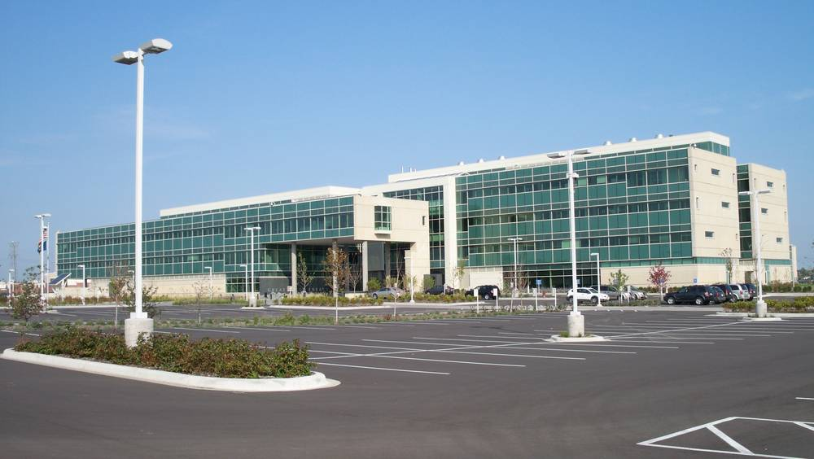
석유 최고가격 5회 연속 동결…휘발유 1,784원·경유 1,773원 12월 11일까지
정부 "물가 안정 효과 확인"…정유사 손실 보전에 예비비 4조2,000억 원, 종료 시점은 미정
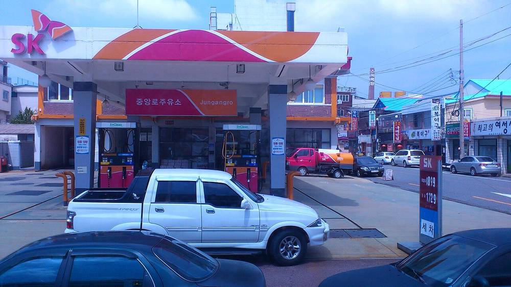
캐나다 캘거리 전기·가스 판매사, 이익 100%를 지역 성소수자 단체에…"요금이 공동체 기금이 된다"
사회적기업 Q-TILITIES, 대표는 월급 안 받고 5년 안에 10만 달러 이상 환원 목표
美 애너하임 시영 전력, 태양광 150MW·배터리 138.5MW 20년 구매 계약…약 9억5,500만 달러
시의회 7대0 승인, 약 7만5,000가구분…배터리 성능 3개월 연속 90% 밑돌면 대금 안 내
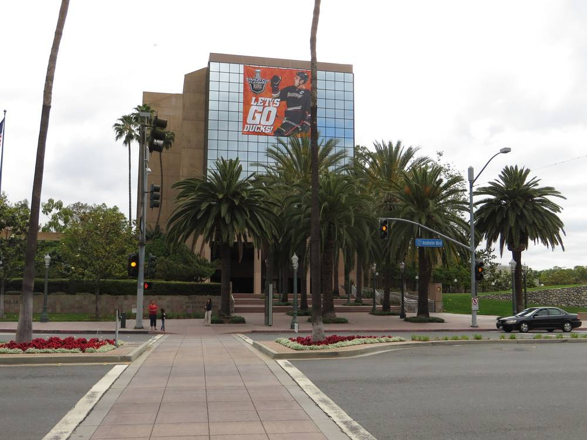
함평군, 빛그린국가산단 'RE100 시범산단'·재생에너지 자립도시 1호 추진…함평 쪽 330만㎡로 확장
"인근 태양광·풍력으로 산단 전력을"…근거 특별법은 아직 논의 단계
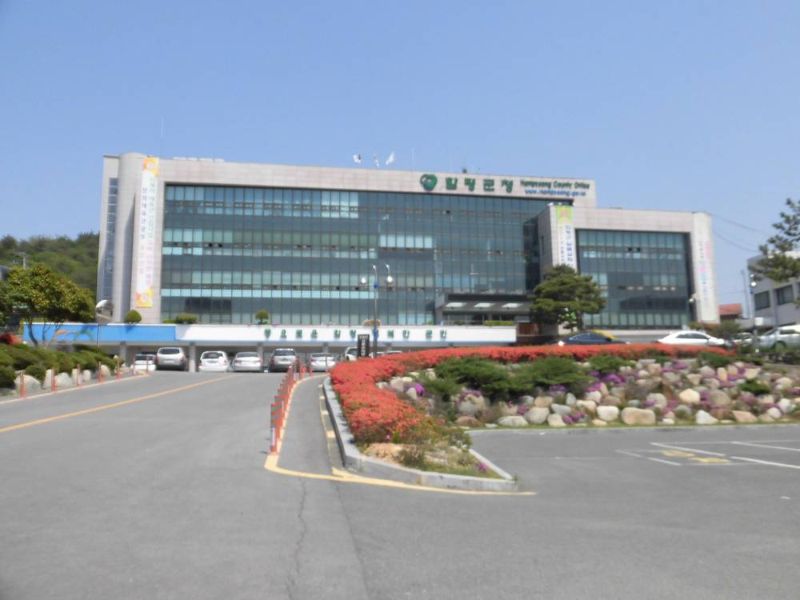
태양광 발전소 3만9,312곳 몰린 전북, 지역별 전력도매가격 차등화에 '비상'…발전단체 공대위 25일 결의대회
전국 발전소의 17.7%·설비 4,984MW…모의분석서 수도권·비수도권 ㎾h당 10.6원 차이, 27일 개정위원회 통과 땐 법적 대응
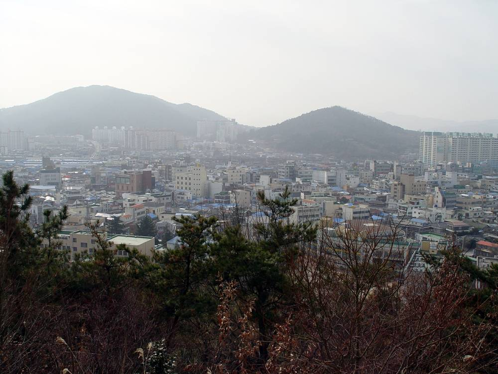
강원도 108억 원 현물출자한 대관령 풍력단지, 연 순이익 3억 원 그쳐…도의회 행감서 "경제성·주민 피해 다시 따져야"
강원개발공사 운영 단지 예상 매출 21억 원…유지보수·인건비 오르면 수익 더 줄 수도, 소음·저주파·그림자 깜박임 등 사회적 비용도 거론

SH 임대단지 지붕 태양광, 낮에 남는 전기는 관리비로 돌아오나…오중석 서울시의원 "요금상계 현황 공개하고 12월 말까지 전환 계획 내라"
LH가 세종 행복주택 238가구에서 공동주택 첫 요금상계 시작하자 같은 ZEB 3등급 고덕 온빛채 697가구 사례 따져…상계 안 되는 단지는 이유 목록부터

美 위스콘신 전기요금, 민간 전력회사 2020년 뒤 29% 올라…공영 14%·협동조합 15%의 두 배
연 8,000kWh 쓰는 가구 기준 민간 1,513달러·협동조합 1,313달러·시 공영 1,025달러

이탈리아 토르토나에 과학기술단지 주도 재생에너지 공동체…"참여자 전기요금 25~40% 절감"
첫 발전소 약 200kW로 시작해 750kW까지…토르토나 일대 18개 코무네 대상, 2026년 말 가동 목표
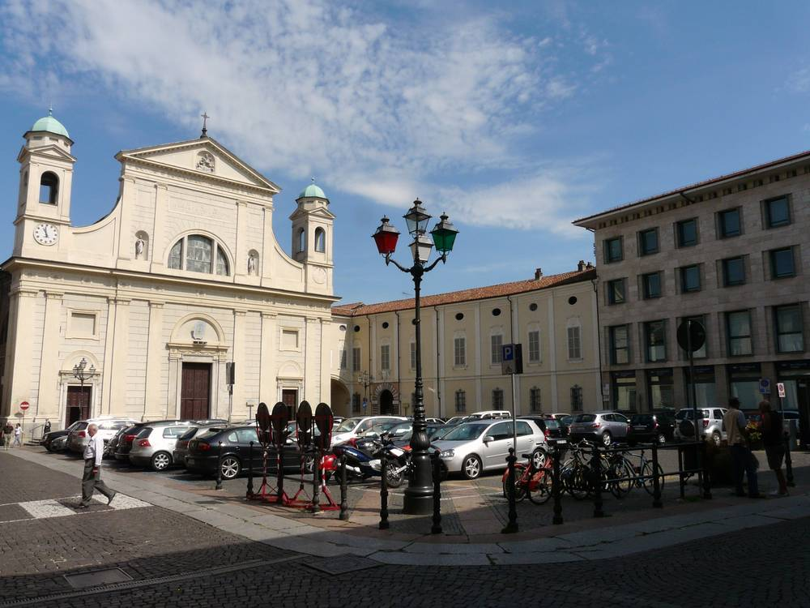
영국 셰틀랜드 "버려지는 풍력 전기로 섬 주민 요금 낮춘다"…의회 주도 '셰틀랜드 공동체 전력 프로젝트' 시동
가구 40%가 에너지빈곤인데 터빈 103기 바이킹 풍력은 송전 막혀 멈추기도…GB에너지·오프젬·SSE 등 실무단 참여, 2028년부터 시범사업 목표
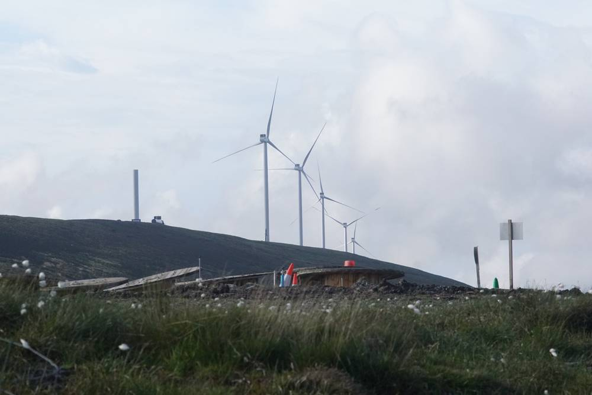
뉴욕시에 '시 소유 재생에너지 개발공사' 세우자…시민단체 보고서 "공공 배터리 200MW만 깔아도 요금 연 1억7,000만 달러 절감"
기후·공공전력 단체 3곳 'PowerNYC' 제안…학교·병원·공공주택 지붕에 태양광·저장장치·지역 열망 직접 개발, 수익 다시 투자하는 자립형 공공 개발자

독일 쾰른 오센도르프, 에너지협동조합과 주택협동조합이 435가구에 세입자 태양광…저장장치 670kWh 붙여 전기요금 10% 싸게
건물 55동 지붕에 750kW, 단지 전기의 절반을 지붕에서…협동조합 "2027년 EEG 개정되면 작은 세입자 태양광은 못 짓는다"
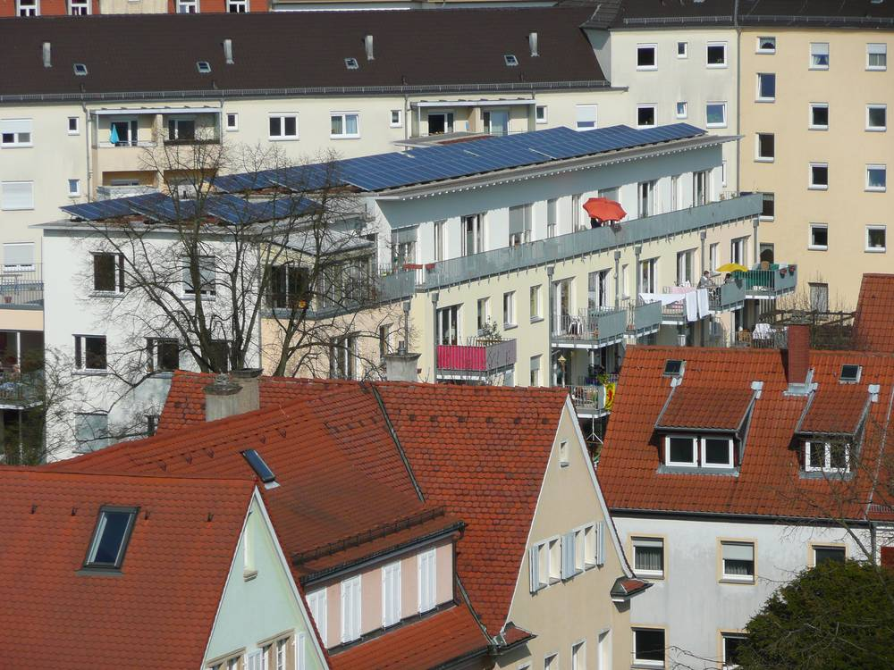
BHESCo, 이스트본 전역으로 '태양광 동네' 사업 확대…전기요금 최대 25% 낮추기 목표
주택 소유자·세입자·지역 사업장 모두 대상…오프젬 에너지 보상 기금으로 운영
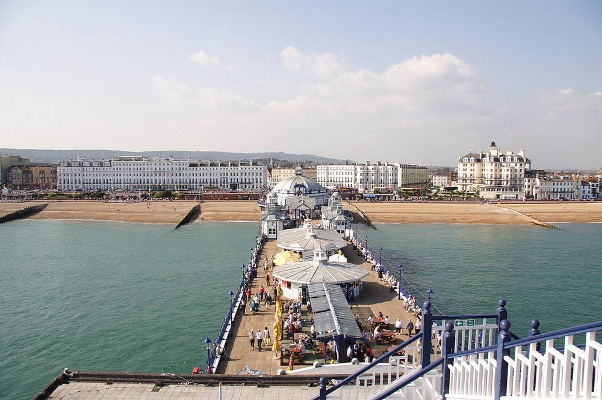
용인시정연구원 "반도체 RE100 수요를 시민 소득으로"…시민 투자·주민 참여·공공자산 태양광 담은 이익공유 모델 제안
이슈리포트 'YRI Insight 119호'…발전 수익 공유, 시공·유지관리 주민 참여, 정책금융·시민투자 연계, 인접 시군과 광역 협력 등 5가지 방안
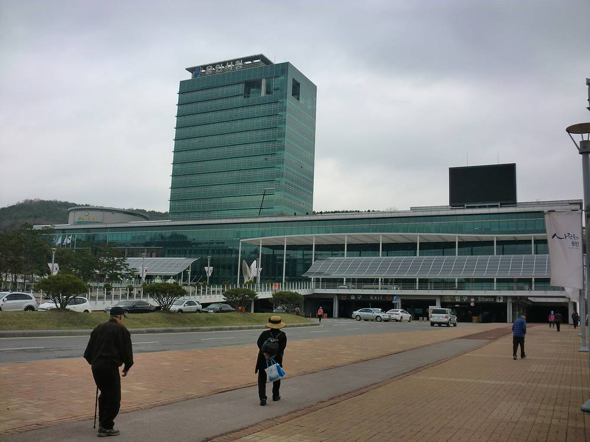
신협, 시민 태양광에서 해상풍력·햇빛소득마을까지 재생에너지 금융 넓힌다…마을 발전시설 자금 최대 85% 대출
안산시민햇빛발전협동조합 발전소 60곳 짓는 데 힘 보탠 경험 살려 고창 해상풍력 1,000억 원 연계대출 참여, 에너지공단 이차보전으로 마을 이자 부담 덜어
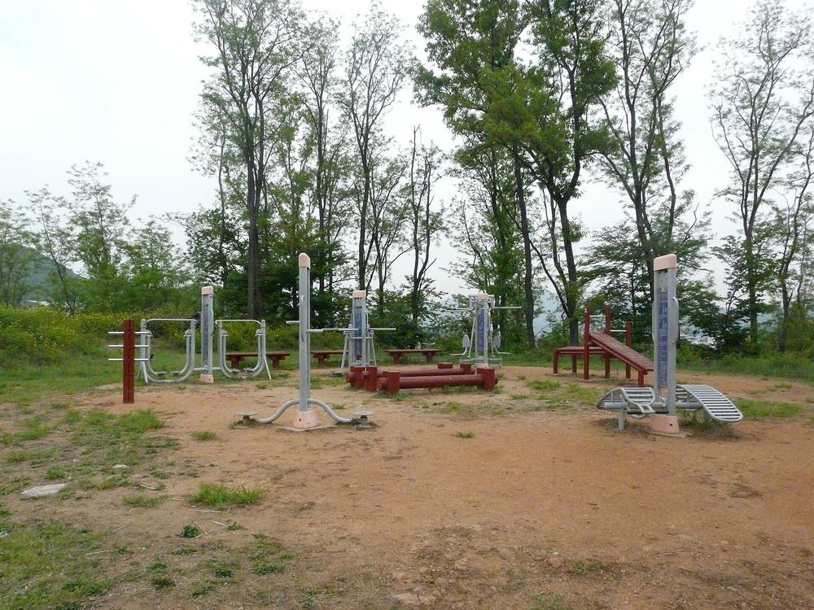
이탈리아 세티 교수, 이웃끼리 나눠 쓰는 태양광 전기를 공공재로…법정 고정가 도입하면 전기요금 20~30% 줄어든다
볼로냐대 교수가 11일 라벤나 강연 앞두고 제안 설명…2차 변전소 45만 곳 아래 공유 전력을 시장에서 떼어 kWh당 8.5센트 예시, 망 요금도 쓴 구간만큼만

체코 풍력 마을 3곳 "소음·건강 걱정 현실 안 돼"…수익은 투자자와 맺은 조건 따라 갈려, 쓰레기 수수료 없앤 곳·한 번 받고 끝난 곳
그루나 2006년부터 4기·베주니체 2009년부터 2기·아넨스카 스투단카 6기, 주민 민원 없어…경관 반대는 남아, 세 곳 모두 "착공 전 주민 소통과 투자자 선택이 가장 중요"

새만금 수상태양광 300MW 재공모 응찰 0곳으로 유찰…직접 PPA 수요처 확보·공용시설 분담금 1,386억 원이 걸림돌
첫 공모엔 1개 업체만, 30MW 사업도 유찰돼 13일까지 재공모…"조건 완화·수요처 확보 시간 줘야" 지적

앱으로 모은 개인 투자자 2만2,000명, 공장 지붕 태양광 7,000곳에 4,000억 원 넘게 넣어
에이치에너지 '모햇', 투자금으로 협동조합 세워 공장 지붕에 발전소…기업은 싼 전기, 투자자는 판매 수익 배당

익산시, 12월 영농형 태양광 법 시행 앞두고 "햇빛소득마을과 묶어 금융·ESS 지원"
최정호 시장 "설비 면적은 농지의 20% 안팎, 발전 소득이 더 커"…인허가·설치비·계통 연계는 과제로 남아

미국 캘리포니아 메사 그란데 부족, 첫 공공 태양광·배터리 완공…연 60MWh 발전, 전기요금 연 16,780달러 절감
비영리단체 SELF가 설계·기금 조성, 부족민 4명 고용…주택 최대 150채 계획의 첫 단계 12채는 2028년 봄까지


미국 메릴랜드 하워드 카운티장, 태양광 사업 문턱 높인 의회 조례에 거부권…"에너지 자립·요금 부담 해칠 것"
처음엔 태양광 신규 사업 일시 중단안으로 출발, 농지보전위원회 승인 권한 키운 수정안으로 통과됐으나 되돌아가

미국 일리노이 체리밸리에 7.4MW 커뮤니티 태양광 가동…세입자·소상공인도 구독하면 전기요금 약 10% 절감
700여 가구·점포 쓸 전기, 개발사는 공동체 혜택 협약으로 마을 전기차 충전소에 15만 달러 내놔

새만금 산단 입주기업 2곳에 3,899.68kWp 태양광…개발행위허가 승인
솔베이실리카코리아·에코앤드림에 사업장 내 전력구매계약 방식으로 공급, 올해 말 설치 완료 계획

지역별 도매가격제 막겠다…태양광·풍력·시민발전협동조합 등 8개 단체 공동대책위 꾸려 정부 설명 반박
정부 "현물시장 태양광 99.5%가 1MW 이하, 월평균 정산 가능"…대책위 "개소수 비중일 뿐 매출 보호 아냐", 25일 세종·27일 서울서 집회 예정

주주 1,700명의 독일 시민 태양광 기업 솔라콤플렉스, 태양광+배터리 묶어 5년 고정가 계약
텡엔 인근 4.5MW 태양광·7.2MWh 배터리…낮은 전력가격 시대의 판로 찾기


오스트리아 군트람스도르프 에너지공동체, 2027년 전력망 요금 초안에 반발…"공유 전기 할인 줄어"
규제기관 E-Control 초안은 확정 아냐…공동체 "이웃 간 할인율 57%→49%", 의견 제출은 11월 20일까지

시민·사회연대경제 조직이 함께 출자하는 '가치금융신협' 설립 추진…11일 국회서 포럼
사회주택·의료돌봄·재생에너지에 자금 공급 구상…국회의원 5명 공동 주최, 행안부·신협중앙회 후원

한국서부발전, 국가기술표준원 청사 주차장·옥상에 태양광 추진…연 1,614MWh 생산 예상
5일 업무협약…산책로 등 쓰임 적던 청사 부지 활용, 서부발전이 부지 적합성 검토·단계별 사업계획 맡아…설비 용량·사업비·수익 쓰임새는 안 밝혀

"지붕 없는 주민도 태양광 요금 혜택을"…미국 웨스트버지니아 '커뮤니티 에너지' 입법 촉구 기고
유휴 부지 공유 태양광을 여러 가입자가 나눠 쓰는 제도…필자들 "24개 주에서 효과, 주 의회 나서야"

이탈리아 발레 스크리비아 연금생활자 노조, '재생에너지공동체(CER) 추진위원회' 결성 제안…산간 인구 감소·요금 부담 대응
Spi Cgil 제노바·리구리아, 11월 5일 부살라서 공개 토론회…시민·기업·지자체 묶어 CER 퍼뜨리는 구상, 위원회는 아직 제안 단계

미국 콜로라도 4개 시 공동 소유 공영 도매전력사 PRPA, '2030년 무탄소 전력 100%' 시한 삭제…2027년 도매요금 평균 7.5% 인상
이사회 10월 29일 의결, 무탄소 목표 자체는 유지…2030년 무탄소 비중 80% 남짓 전망, '더 낼 생각 없다'는 주택 고객 48%로 2021년 36%보다 늘어
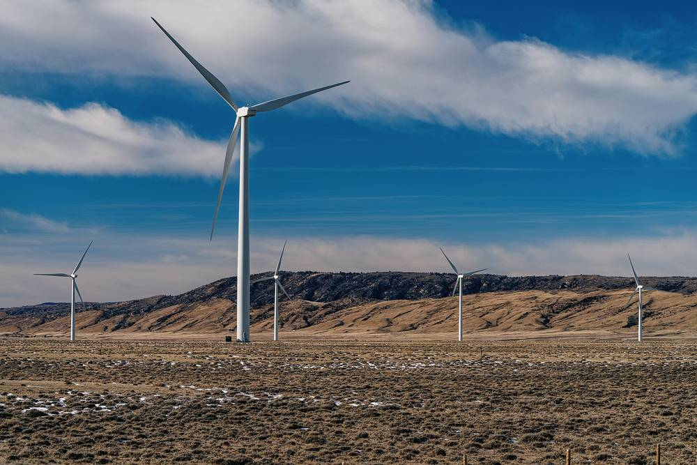
이탈리아 에너지협동조합 ènostra, 2029년까지 자체 발전 3배·조합원 2만8,000명 목표…새 발전 투자 450만 유로는 조합원 출자로
10월 말 조합원 웨비나서 2026~2029 전략계획 발표…고객 공급 전력 약 60GWh→100GWh, 출처 추적 전력 비중 20%→40%, '사회적기업' 전환도 검토

미국 오클랜드항 공영 전력회사, 2025년 공급 전기 84%가 재생·무탄소…항만 측 "민영 전력사보다 요금 평균 약 40% 낮다"
항만이 직접 운영하는 'Port Public Power', 수력·바이오가스·지열을 다른 공영 전력 도시들과 함께 사들여…입주사 전기화로 늘어날 수요에 대비해 새 변전소도 짓는 중
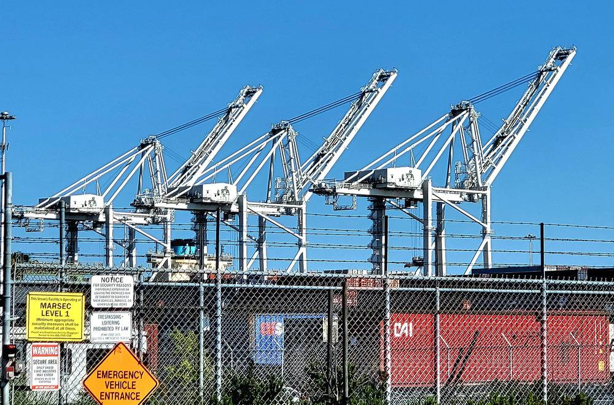
스페인 테루엘 첫 사회적경제상, 농촌 마을 에너지협동조합 옵티메네르에 사회적경제 발전 기여상
루코 데 힐로카에서 공동체 에너지 관리 모델 이끈 공로…후보 15건 중 5개 부문 시상, 농촌 이동·빈집·섬유 재활용 사업도 수상
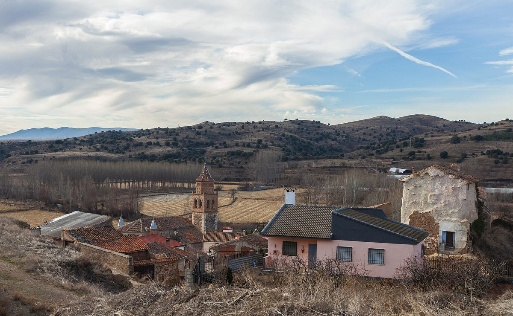
몰도바 의회, 에너지공동체법 2차 독회 가결…주민·지자체·아파트 소유자협회가 함께하는 비영리 결사체, 이익 배당 금지하고 재투자
회원인 지자체는 소유 부동산·에너지 기반시설을 공동체에 쓰게 할 수 있어…관보 게재 한 달 뒤 시행, 기존 공동체는 24개월 안에 새 규정으로 재편

슬로베니아 포들레흐니크, 학교·청사 지붕 태양광으로 공공시설 묶어 공동체 자가공급…청사 겨울 전기요금 약 2,500유로가 123유로 남짓으로
두 설비 합계 200kW 남짓에 사업비 25만5,000유로 조금 못 미쳐, 보조금 15만6,000유로 조금 못 미쳐…하수처리장·펌프장·충전소까지 전기 대고 연 효과 약 4만2,000유로 잠정 추산

국회서 에너지 기본권 토론회…요금 지원 넘어 최소 보장기준·참여권·편익공유권 법제화 제안
서왕진 의원 주최, 고재경 환경정의 공동대표는 에너지전환 참여권·정보권·편익공유권, 김재경 에너지경제연구원 선임연구위원은 기본에너지·공급중단 방지의 에너지법 명시 제안

서울 수돗물 만드는 데 전기요금 891억 원…아리수본부 재생에너지 조달 1.3%, 온실가스 감축은 목표 미달
목소영 서울시의원 행정사무감사 지적…전력 90%는 정수센터 펌프, 고효율 인버터는 4곳뿐, 내년 배출권 구매비 약 2억5,000만 원 전망

독일 졸링겐 주택협동조합, 지붕 태양광 414kWp로 182가구에 '세입자 전기'…사업자 "기본요금보다 최소 10% 싸게"
조합은 지붕만 빌려주고 공급사가 설치·운영해 조합 자본 투입 없어…2027년 봄 37가구 난방도 히트펌프로, 공사비가 월세에 얹히는 것 막는다

조국혁신당, 초광역특구법안 당론 발의…재생에너지 사업은 총사업비 4% 이상 주민 투자 기회 먼저
주민·노동자 참여 상생협의회, 송·배전 공동접속설비 국가 지원 담고 주 52시간제 예외·지주회사 규제 완화는 빼…규제특례엔 5년 유효기간, 발의 단계

뉴질랜드 애슈버턴 지역의회, 오르는 전기요금에 태양광 검토…연 40만 달러 절감에 500만 달러 넘는 선투자 놓고 의원 이견
연 전기료 약 177만 달러, 다음 주 장기계획 예산 심의서 부서별 태양광 안 검토…"그 돈 도로에 쓰는 게 낫나" 대 "건물 지붕에 조금씩"

국민의힘, 내년 예산 삭감 대상에 '햇빛소득마을 등 재생에너지'·협동조합·사회연대경제 사업 꼽아
예결위원들 "재생에너지 1조8,210억 원은 증액중독, 협동조합 819억 원·사회연대경제 633억 원은 우리끼리 예산" 주장…햇빛소득마을만의 삭감액은 안 밝혀…정부는 같은 날 예산안 제안설명에서 햇빛소득마을 확산 등 재생에너지 보급 예산 두 배 증액을 설명했으나, 지목에 직접 답한 반론은 아직

브라질 니테로이시, 산사태 위험 언덕에 시영 태양광 약 1.5MW…전기는 학교·어린이집 요금 상계, 공사 인력 20%는 동네 주민
7월 4일 준공한 보아비스타 언덕 태양광 공원, 공사비 770만 헤알에 연 160만 헤알 절감 추산…식생 복원·빗물 저장으로 사면도 붙잡아, 곁에 사는 주민 전기요금은 그대로
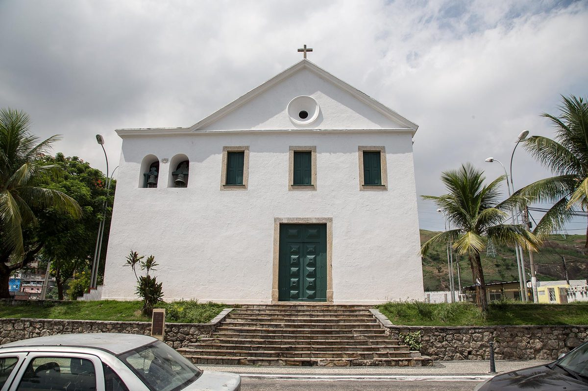
미국 오하이오 애선스, 주민투표로 전기요금에 붙인 탄소 요금으로 해마다 약 10만 달러 모아 공공 태양광
2018년 도입, 보통 가구 월 2달러가 안 되는 부담…원하지 않으면 빠질 수 있지만 대부분 남아, 옛 무기고 태양광·공공수영장 변압기 교체에 써

이탈리아 폼페이아나 시, 학교·시청·공영주차장 태양광과 재생에너지공동체(CER)를 한 묶음 민간투자 입찰…공사비 65만7,099유로, 21년 계약
양허 전체 추정가치 141만1,638유로, 시가 운영사에 해마다 2만9,585유로 내는 구조…응찰 11월 27일 마감·30일 개찰, 제안사 우선권은 EU 판결 따라 없애

용인시정연구원 "재생에너지 혜택은 시민에게"…시민투자·주민 일자리·공공자산 태양광 담은 '용인형 이익공유 모델' 제안
이슈리포트 'YRI Insight 119호'…반도체 산단 전력설비 약 15GW 전망 속 시민협동조합·펀드 투자, 송전망 영향 주민 우선 출자권 검토, 공영주차장 51곳 중 17곳 태양광 계획 제출

남부발전·부산항만공사, 부산항 항만부지 육상풍력 공동개발 협약…해상풍력·태양광·ESS로 넓힐 계획
남부발전은 기술·재무 타당성 조사, 항만공사는 부지 제공·계통 연계 맡아…발전 용량·사업비·위치·일정은 아직 공개 안 돼

같은 댐 수상태양광, 합천은 주민 1,400여 명 투자로 가동하고 용담은 멈췄다…나주호 9년 갈등에 비춰 본 '주민 의견 묻는 순서'
합천댐은 군과 함께 25인 주민협의체 꾸려 설명회·공청회 10여 차례(수공 자료), 용담댐은 사업자 주도 설명회에 반발 끝 중단 통보…나주호는 허가 신청 뒤에야 의견 조회, 농어촌공사·사업자·나주시 답변은 아직

공공임대 아파트 태양광, 쓰고 남은 전기로 관리비 깎는다…LH, 세종 산울마을 4단지 238가구에 공동주택 첫 요금상계
태양광 246kW로 월 사용량의 약 49.1% 생산…LH "가구당 월평균 약 8,000원 추가 절감 기대", ZEB 5등급 이상 단지로 확대 검토

태양광 사업자들, 지역별 도매가격제 상정되면 곧바로 가처분 신청하기로…민간 석탄·LNG 발전사도 합류
지방 기업 전기료 할인 재원 2조8,000억 원 가운데 1조5,000억~1조8,000억 원을 비수도권 도매가격 인하로 메우는 구상에 반발…협회는 오후 1시 판매 단가 39.1% 하락 모의계산, 정부는 의견 검토하겠다는 입장

프랑스 플루이지 풍력단지, 2009년 주민 10명이 세 기 중 한 기에 출자…17년 뒤 "다른 투자보다 덜 위험"
한 사람 한 주 200유로, 주주 당좌계정 이자는 연 8%에서 시작…생브리외 지역 에너지기후청, 출자 주민 경험 나누는 견학 열어
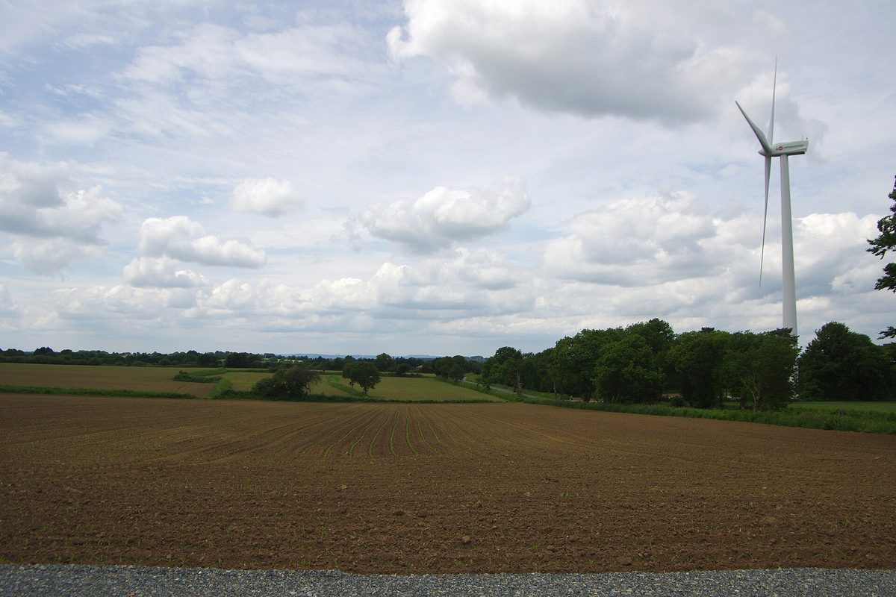
프랑스 도르도뉴 혼합경제회사 SEM 24, 광역 지자체 땅에 연 5,150MWh 태양광 준공…지역 제과 공장에 20년 고정가로 직접 판매
패널 7,668장·사업비 510만 유로 중 60만 유로는 누벨아키텐 지역 지원, 그랑 페리괴는 7ha를 30년 장기임대로 내주고 해마다 사용료…전력망 포화 때 출력 제한으로 저장 배터리 검토

새만금 산단 RE100용 30MW 태양광, 첫 공모에 1개 컨소시엄만…새만금개발공사 13일까지 재공모
공유수면 약 44만㎡에 463억 원 들여 짓고 준공 뒤 20년 운영, 국가산단 5·6공구 입주기업과 직접전력거래(PPA)…첫 공모 참여가 저조했던 구체적 이유는 확인 안 돼

정부 '주민참여 우수사례' 한림해상풍력, 주민 몫 REC 수익에서 주민 회사채 이자 먼저 뗐다…로펌 3곳 "법 위반" 자문 의견
주민법인 3곳이 산 회사채 300억 원의 연 7% 이자를 가중치 0.3 추가 REC 수익에서 충당, 남은 돈만 '이익공유'로 지급…에너지공단 "절차 진행 중", 기후부 "문제 확인되면 개선", 사업자 "주민과 약정, 당국과 협의 중"

현대제철 당진제철소 주차장 두 곳에 태양광 3.27MW 가동…환경단체는 재생에너지 대폭 확대 주문
61억 원 들여 특수목적법인이 설치·운영하고 현대제철이 빌려 쓰는 설비임대 방식, 연 1,736톤 감축 예상…충남환경운동연합 '필요 전력에 비하면 시작 단계'

그리스, '에너지 공유 권리' 담은 전력시장 법안 의회 제출…다른 건물에서 만든 태양광 전기도 가정·중소기업·지자체가 나눠 쓴다
법안 12조로 전력법에 137Γ조 신설…6MW 이하 설비는 제3자가 운영 대행, 공공 소유 설비는 공유 전기의 평균 10% 이상을 취약가구에 돌리도록 노력해야

콜롬비아 정부 '에너지공동체' 태양광 사업, 패널 견적가가 시장가보다 높다는 문제 제기…대부분 공정 50% 못 미쳐 연말까지 연장 요청
2025년 말 공기업 3곳과 계약 17건·9,140억 페소, 2만8,544가구에 패널 6만221장…정부·전 차관 "가구당 비용으로 보면 과다 비용 없다"

프랑스 랑드 생폴레닥스, 옛 폐기물 적치장에 4.57MWc 시민 태양광…주민 투자 조직 CIER40 따로 꾸려
코뮌·에네르코프 누벨아키텐 등이 사업 회사에 참여하고 대출·공공 자본·시민 참여를 섞어 400만 유로 넘게 투자…랑드도는 태양광 1,413MW로 프랑스 도 가운데 1위지만 에너지 소비 감축은 4.2%에 그쳐
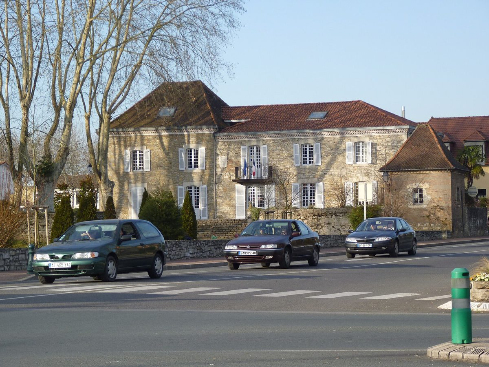
이탈리아 몬셀리체시, 재생에너지공동체에 '생산자 조합원'으로 가입…공공건물 지붕 태양광 이익을 에너지빈곤 가구 요금 지원에
시의회 승인 거쳐 공동체 '몬테그로토 테르메 1' 참여, 앞으로 지을 시 건물 태양광 전기 내놓기로…쓰임새는 지역위원회가 함께 정하고, 재단 지원 3만 유로로 연내 설계·주민 안내

루마니아 오크나무레슈시, 시 태양광으로 한 해 590MWh 만들어 시 소비 444MWh 넘겼지만 요금은 다 못 덜어…EU 현대화기금에 1.72MWh 저장장치 사업 신청
낮에 kWh당 0.40~0.65레이에 내보내고 밤에는 1~1.30레이에 사는 값 차이 때문…약 50만 유로 사업은 사실상 전액 무상 지원을 노리고, 시장은 배터리를 가득 채우면 가로등을 하룻밤 넘게 켤 수 있다고 설명
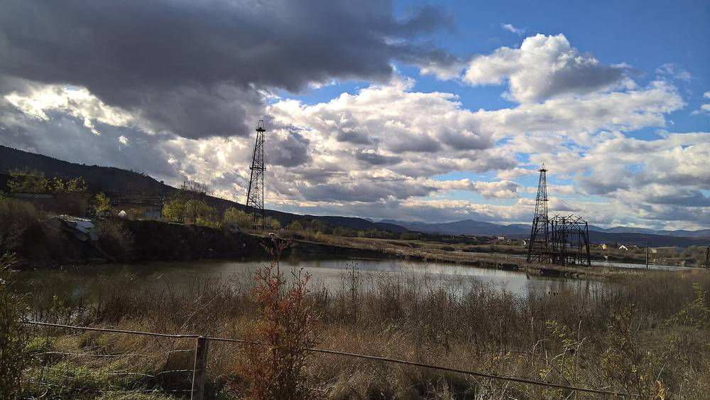
독일 치메츠하우젠 풍력 14기, 투자사는 '30년 최대 2,300만 유로' 계산서…시장은 반대, 가구당 전기 할인은 연 45유로
가동 첫 15년은 영업세 거의 없고 토지 임대료는 사유지 주인 몫…법정 분담금 연 약 28만2,000유로는 마을이 내는 군 분담금 240만 유로의 10분의 1 남짓

독일 바이에른 에겐호펜 주민, 뮌헨 시영 전력사가 짓는 7.2MW 풍력발전기에 협동조합 '고정 이자 대출'로 참여 길 열려
이웃 마을 시민에너지협동조합 '마이자허 란트', 5월 총회서 활동 지역 넓혀 에겐호펜 주민 우선 모집…첫 설명회에 40여 명, 발전기는 연말연초 가동 예정
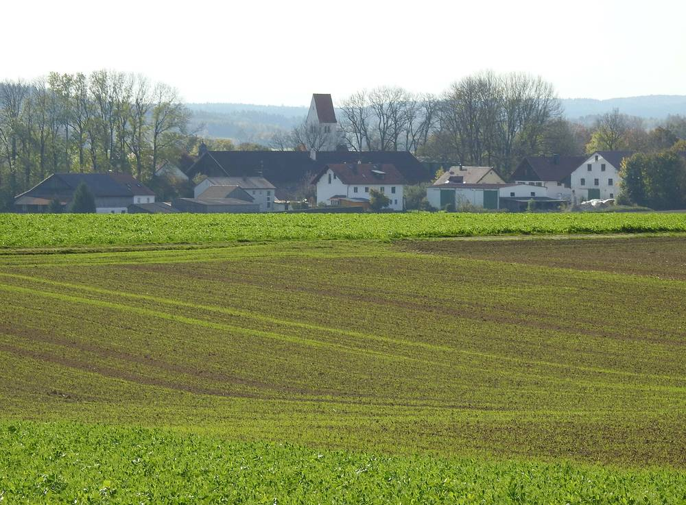
영암군의회 "햇빛소득마을, 수익 나누기 전에 자부담·대출 상환 기준부터"…죽정마을 태양광 500kW·ESS 1.5MWh에 14억 원
주요사업장 현장방문 결과보고서에서 지방소멸대응기금·대출 이자 지원·저금리 금융 협약 검토 요구…영암은 10개 마을 9개 사업 조건부 선정, 보고서 속 수익 계획은 마을기금·취약계층 지원 각 40%
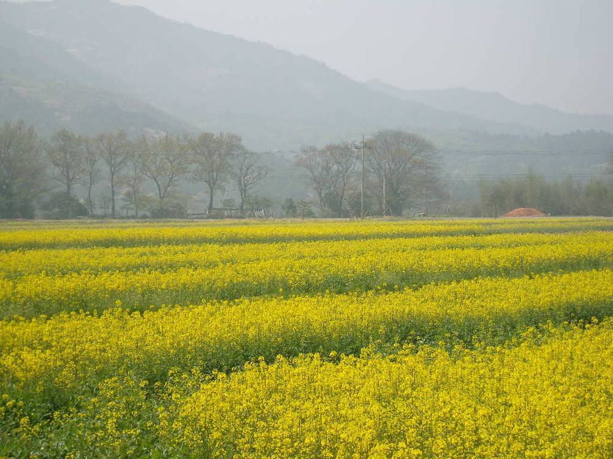
미국 클리블랜드 시영 전력, 여름 정전 뒤 요금 인상 요청…늘어난 수입으로 2028년 3,000만 달러 빌려 설비 개선
120년 된 시 소유 전력회사 CPP, 고정요금 신설·많이 쓸수록 비싼 요금 구조 제안…지역 재생에너지 직접 생산도 전략계획에, 시의회 "개선 일정 없인 승인 어려워"
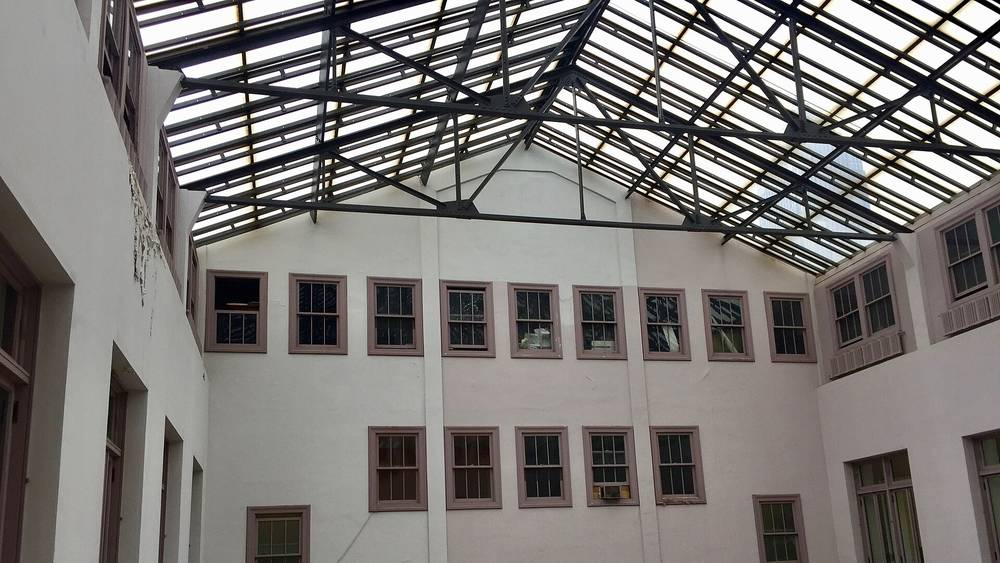
대만 핑둥 츠산 마을, 옛집 고친 돌봄 거점 지붕에 6kW 태양광…아낀 전기요금을 어르신 밥상에
주민이 내놓은 빈 옛집 '라오춰54' 수리 때 환경보호국 권유로 설치, 촌장 추산 월 약 2만 대만달러 요금 절반 줄여…저장장치 없어 정전 땐 못 써
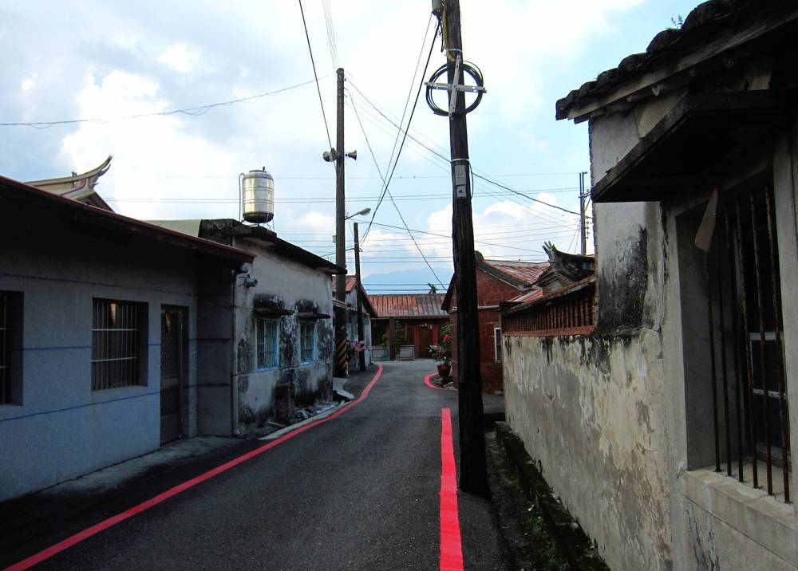
1990년 조성 부산 신평장림산단에 태양광 12.253MW·ESS 5MWh…남부발전 컨소시엄, 2029년까지 320억 원 투입 협약
입주기업 지붕·공공 유휴부지 활용, 정부출연금 200억·지방비 30억·컨소시엄 90억 원…운영 수익은 재투자하고 부산시와 만든 '햇빛소득' 모델 적용 방침, 지역 몫은 아직 안 나와

파주시, 에너지전환포럼 에너지전환상 지방자치 부문 수상…공공 재생에너지 기업 직접 PPA·아파트 알뜰 전기요금제 추진 평가
10월 28일 '2026 에너지전환의 밤'서 시상, 시는 기초지방정부 첫 수상이라고 밝혀…기업 공급 용량·전기요금 절감 규모 같은 숫자는 발표에 없어
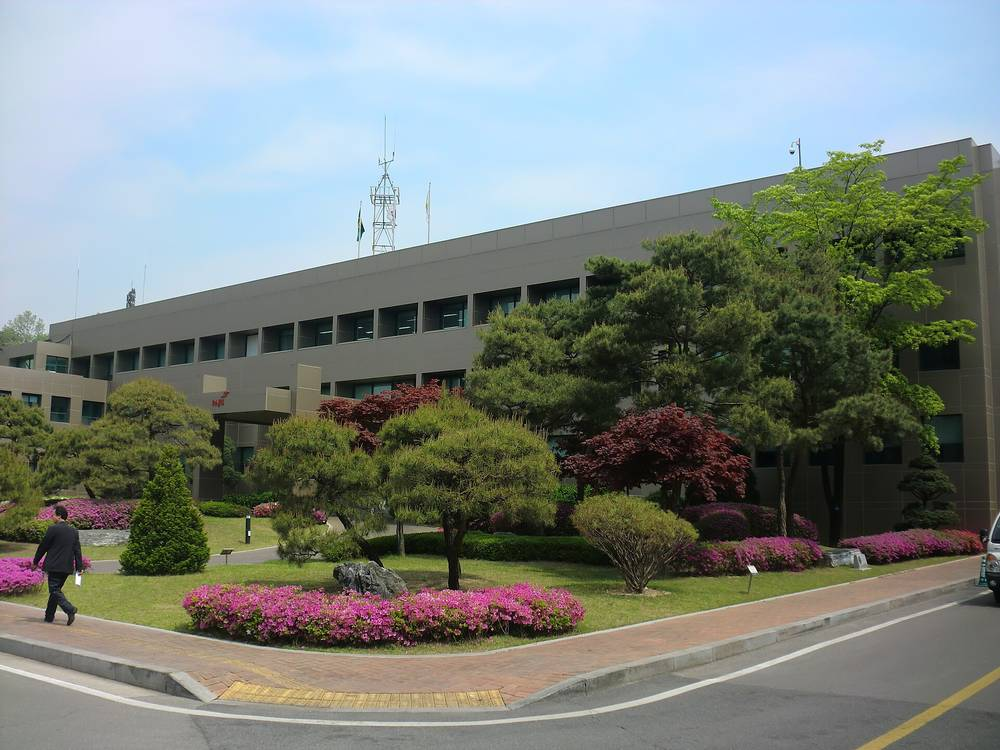
신한자산운용, 주민수익공유 펀드·에너지 인프라 성장 펀드 합계 약 5,000억 원 결성…주민 펀드 첫 투자처로 대규모 해상풍력 주민참여 사업 확보
발전단지 인근 주민·주민조합에 지분·채권 투자 자금을 대고 발전수익 일부를 배당·이자로 돌려주는 구조…주민 펀드 단독 금액, 첫 투자 사업 이름, 주민 금리·배당 조건은 발표에 없어

제주 한림해상풍력 주민 투자 300억 원 가운데 200억 원은 공단 정책융자…투자 배당과 도민 공공 환원을 나누자는 제안 나와
인근 3개 마을 주민 1,009명 협동조합 투자, 저리 융자 대상은 거리·거주 기간·어업권 피해로 제한…추자해상풍력 '주민 우선, 도민 확대' 구상엔 금융비용 격차·배당 소외 우려, 지역 일간지 기획 연재 마무리 제안

베를린 공영 지역난방 회사 BEW, 유럽투자은행서 5억 유로 대출 한도…"2030년 석탄 끝내고 하수 열 대형 히트펌프로"
첫 2억5,000만 유로 서명·최장 25년…KfW 대출 10억 유로에 이어 2030년까지 약 35억 유로 투자, 상수도공사 하수 열·청소공사 소각장 증기 활용
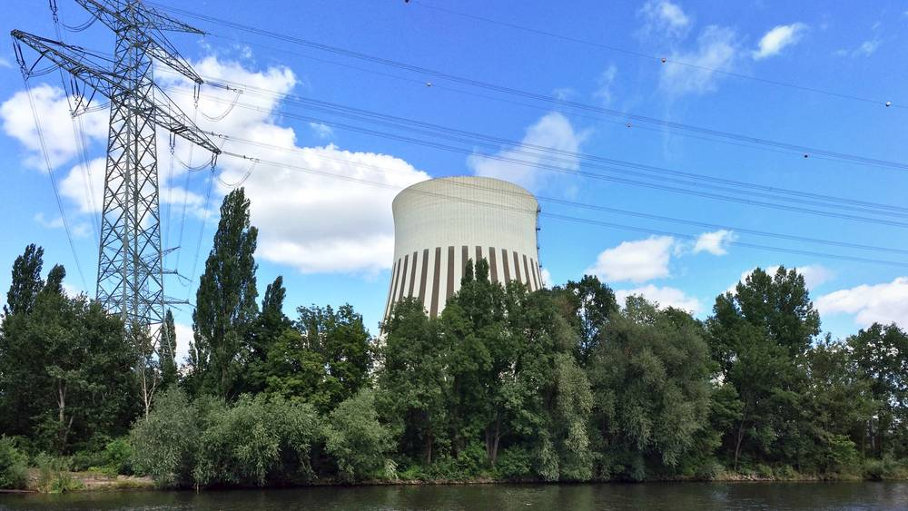
미국 입스위치 시영 전력, 집 단열·히트펌프 비용 먼저 대고 전기요금으로 10년 무이자 회수…내년 1월 'ReInvest' 시작
농무부 대출 500만 달러로 약 200가구 예상…절감액이 비용의 80% 이상 메울 공사만 지원, 이사 가면 남은 부담은 다음 거주자에게
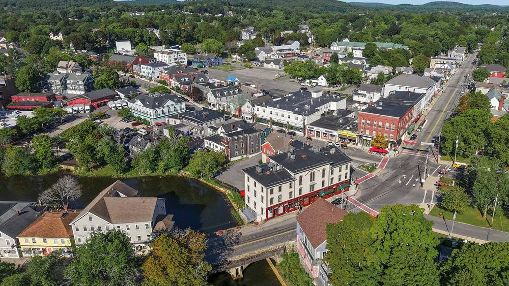
독일 자르베크 지역 열망 주민총회에 약 230명 모여…대상 지역 455가구 초청해 요금·기술과 열 협동조합 설립 설명
지자체 지도부, 10월 28일 저녁 마을 회관 뷔르거샤이네서 열망 잠재 지역 주민에게 사업 직접 안내…시장은 마을 기반시설의 큰 걸음이라고 강조
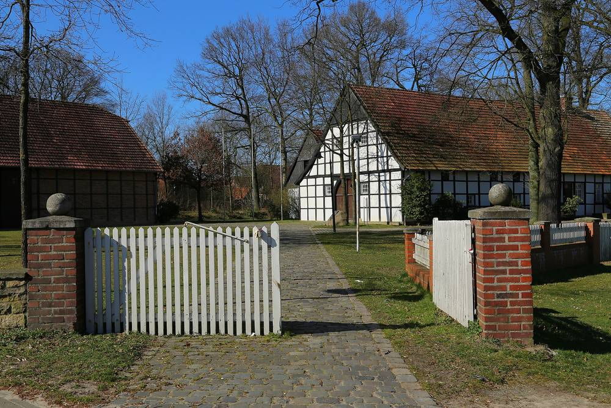
스페인 엘프라트 '시민 에너지 공동체', 공유 태양광 지붕 4곳에서 19곳 1MW로 늘려…낮 시간 1,500가구분, 요금은 판매사보다 50% 낮게
시청 40%·지역 기업 40%·사용자 협회 20%가 지분 나눈 비영리 법인…지붕·투자 없이 가입만으로 참여, 밤 공급 위한 공동 배터리는 규제에 막혀 시범 단계
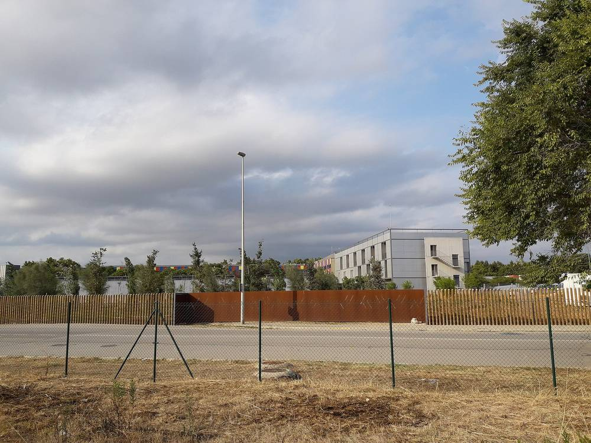
독일 튀빙겐 시영 에너지회사, 첫 시민 직접 투자 상품 내놔…트라우프비젠 태양광 단지에 500유로부터, 자사 에너지 고객 연 4%
'swt-시민투자'는 기간 7~10년 후순위 대출 방식, 그 밖 시민은 연 3.5%…첫 이자 2027년 12월 31일, 연방도로 B27 따라 1km 넘게 이어진 회사 최대 지상 태양광·배터리 단지
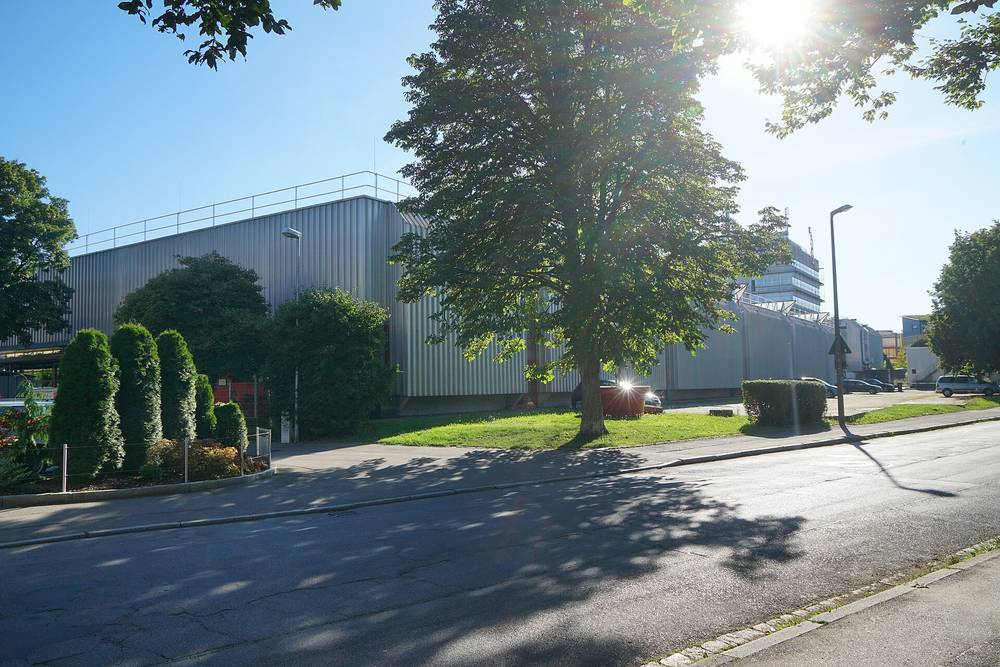
공공주도 해상풍력 전북 철회·제주 유찰 잇따라…인천 IC1 680MW 6조4,612억 원, 사업자 미정 속 재원에 '주민조합대출' 2,584억 원
서부발전 컨소시엄 부안 1GW 참여 철회, 추자 2.37GW·제주 서부 181MW 유찰…iH 자기자본 15%·일반대주단 81%·주민조합대출 4% 계획, 출자 한도는 약 1조1,875억 원

행안부, 주한 외교사절 정책설명회에 사회연대경제 넣고 횡성 하대리 햇빛소득마을 방문 일정 잡아
29~30일 강원 원주·횡성·홍천·춘천 일원, 재난안전 중심이던 소개 범위를 정책 전반으로 넓혀…하대리는 햇빛연금 협동조합 중심으로 주민 65가구 참여, 1,000kW 태양광 추진 계획

"공영주차장 태양광, 시민은 펀드 투자자 아닌 사업 주체로"…장시정 염전골햇빛발전협동조합 이사장, 인천 40MW 공공 SPC에 협동조합 참여 요구
필자 "인천시 2027년 상반기 SPC 설립 계획…설계 단계부터 시민협동조합 넣어야", 수원 동부버스 공영차고지 협동조합 발전소 본보기로…시의회·시민발전협동조합네트워크 '지원 조례' 협의 중

아르헨티나 코르도바 베르로타란 전력협동조합, 첫 태양광 800kW 준공…주택용 조합원 전기요금 15~20% 인하 추산
발전량은 조합이 주 전력공사에서 사 오는 전기의 약 3분의 1, 11월 고지서부터 반영…코르도바에선 배전 협동조합과 손잡은 솔라 공동체 12곳·11.4MW, 업체는 2027년 조합 17곳 40MW 내다봐
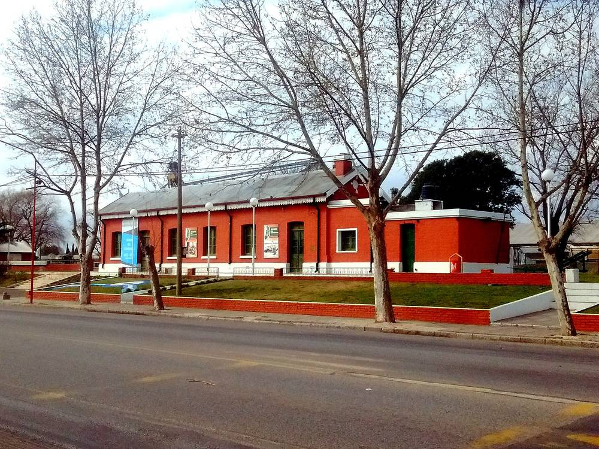
독일 기후 지자체 자르베크, 마을 바이오가스·풍력 전기로 데우는 지역 열망 요금 28일 주민총회서 공개…마을 중심 건물 455곳 대상
열 사업체 베르메베르크, 11월부터 2027년 3월까지 연결 가계약 받아…계약이 충분히 모이면 지자체 의회가 최종 결정하고 연결률 높은 거리부터 공사, 첫 열 공급은 2028년 말 목표
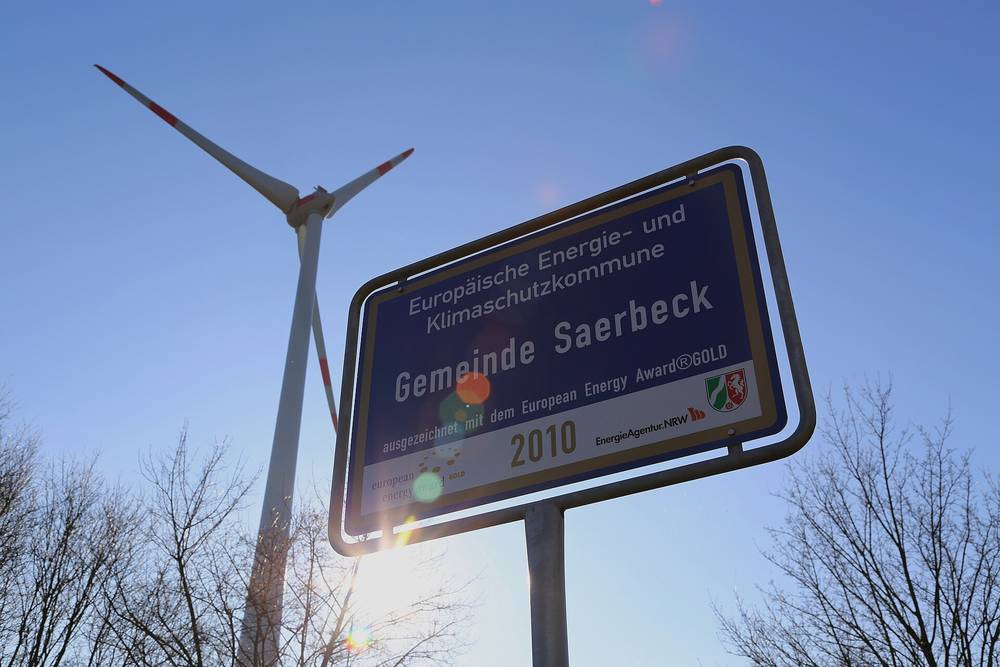
함평군, 군 주도 계획입지로 연 2TWh 재생에너지 공급 구상…사업자 선정 때 가격과 함께 주민소득계획 반영
영농형 500MW·일반 400MW·건물 100MW에 인접 지역 500MW 공급계약 검토…부지·인허가·계통·주민협의 군이 먼저 준비하고 영농형 수익공유 모델 마련, 주민 지분·평가 비중은 공개 안 돼

담양 죽림마을 주민들, 협동조합 세워 1MW 햇빛소득마을 준비…예상 매출 2억4,000여만 원, 계통 막혀 4개 마을 묶는 ESS 검토
대출 상환·유지비 빼고 남는 돈은 조합원 배당·마을기금·경로당 복지에…ESS 예상 설치비 한 곳당 약 80억 원, 군 관계자 설명 분담은 정부 40%·민간 30%·지방비 30%로 아직 확정 아냐
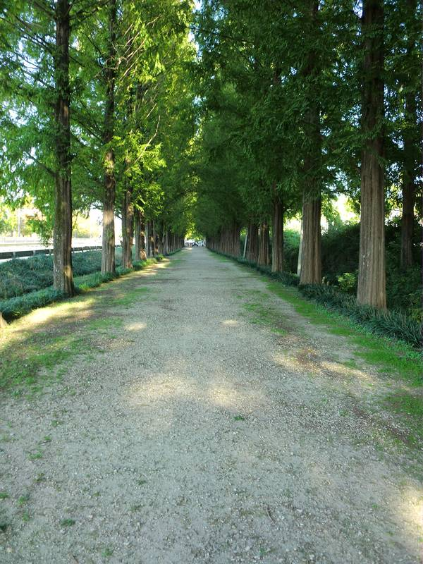
평창 운두령 21MW 풍력 업무협약 체결…600억 원 사업에 주민·군 일부 투자, 주민은 해마다 투자금의 10% 가량 이자
용평면 노동리 운두령 일대 풍력단지, 28일 풍력개발업체·평창군·주민 협약…이자 수익으로 마을 복지 꾸리는 공공주도형 사업 평창서 처음, 주민 투자 총액·참여 주민 수·투자 방식은 아직 안 나와

신한은행, 발전소 인근 주민 지분·채권 참여 자금 대는 1,700억 원 규모 주민수익공유펀드에 500억 원 투자
신한자산운용 조성, 주민이 주주·대주단으로 참여할 초기 투자금 조달 지원…금리·참여 한도·투자 대상 사업은 발표에 없어, 착공 전 개발 단계 겨냥한 3,000억 원 생산적금융펀드에도 2,000억 원

제주 한림해상풍력 인근 3개 마을, 총사업비 4.7% 투자해 배당…추자해상풍력은 '주민 1순위·도민 2순위' 투자 구상
기존 풍력은 당기순이익 17.5%를 공유화 기금으로…추자 재공모는 연 1,300억 원 고정 조건 대신 다른 방식 검토, 2.37GW 전력 육지 송전엔 해저연계선 900MW 한계
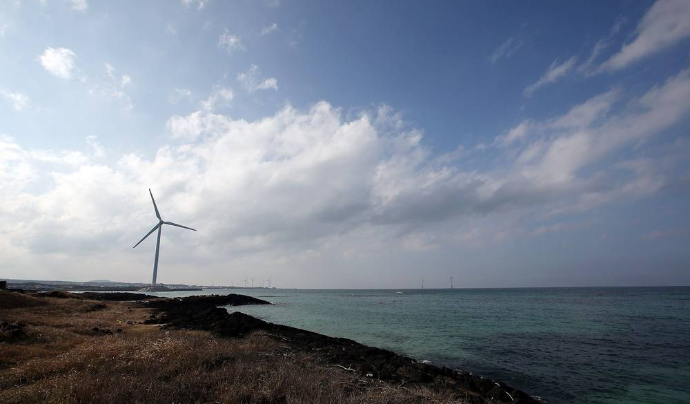
미국 브루클린 24세대 주택협동조합, 추가 분담금 없이 지붕 태양광…건물 통합계량 차익으로 23만2,000달러 대출 갚는다
선셋파크 '파크힐', 세대별 전력 계정 없애고 조합이 전기 한꺼번에 사서 조합원에게 소매요금 청구…재계량 수입 연 7,000달러·태양광 크레딧 연 7,000달러에 정부 지원금으로 상환, 갚은 뒤 쓰임은 이사회가 결정
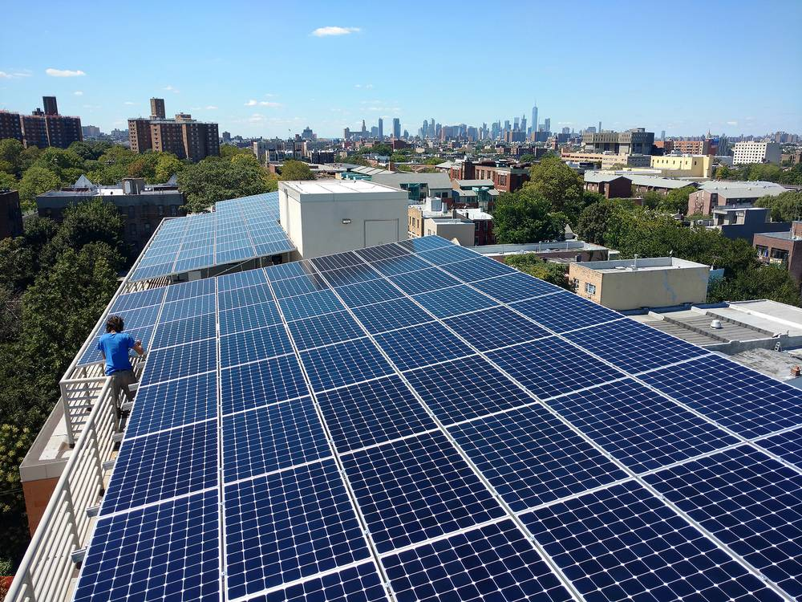
루마니아 시비우시, 4.8312MW 시 소유 태양광 단지 계약…가로등 등 공공시설 전기요금 상계
델룰 더이 부지에 EU 현대화 기금 2,805만 레이, 연 최소 6,468.574MWh…2027년 초 착공 뒤 5개월 안에 가동, 남는 전기 담을 배터리 2,547만 레이는 따로 신청
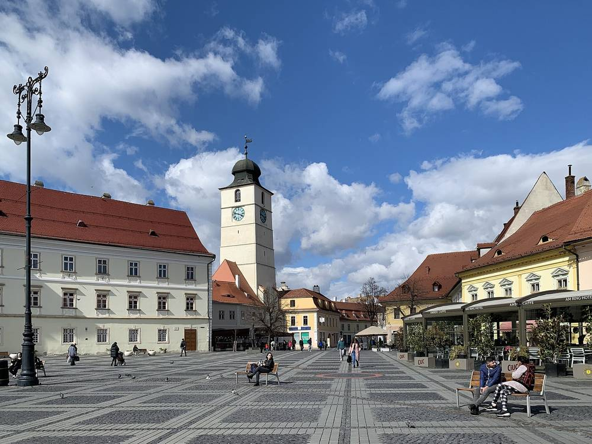
호주 킴벌리 외딴 마을 6곳, 지붕 태양광 183채가 495가구 전기요금 깎아 줘…3년간 크레딧 약 27만5,000달러
서호주 전력공기업 호라이즌 파워 '킴벌리 마을 태양광 절약' 이달 마무리, 약 1.5MW·평균 8.2kW…패널 없는 이웃도 요금 크레딧, 경유 약 12만2,000리터 대체
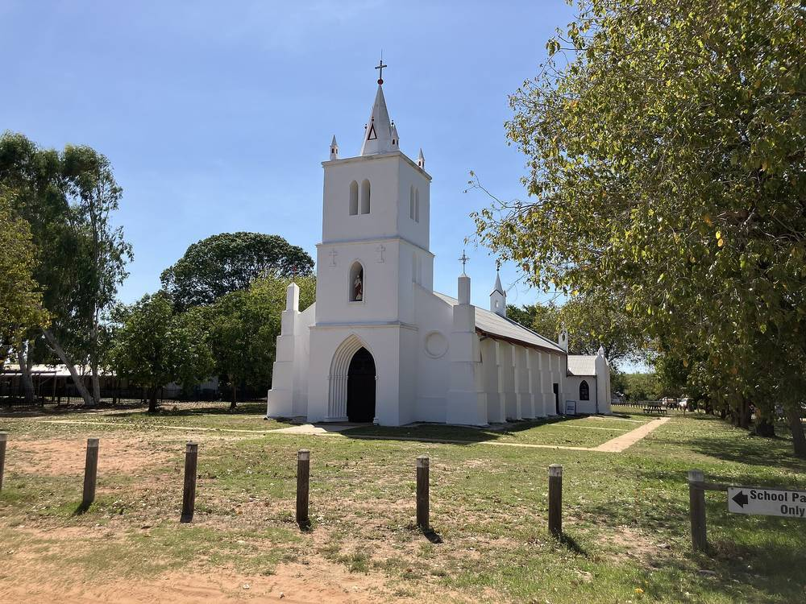
이탈리아 이브레아 125년 에너지협동조합 Aeg, 가스 배관망 이탈가스에 넘기고 매각 대금 전부 카나베세 지역에 재투자하기로
조합원 약 2만 명, 지난 2년 요금 환급으로 100만 유로 돌려줘…광역 입찰 제도로 배관망 운영 접고 재생에너지·사회 사업 담은 산업계획 마련 중, 매각 금액은 비공개

한국영농형태양광협회·한국탄소중립농업협회, 햇빛소득마을 공동 추진 협약…영농형 태양광에 탄소중립농업·마을사회적경제 묶겠다
23일 사업협력 MOU, 표준모델 개발·시범마을 발굴 등 7개 분야 협력…시범마을·사업비·수익배분은 아직 정하지 않고 별도 협약으로
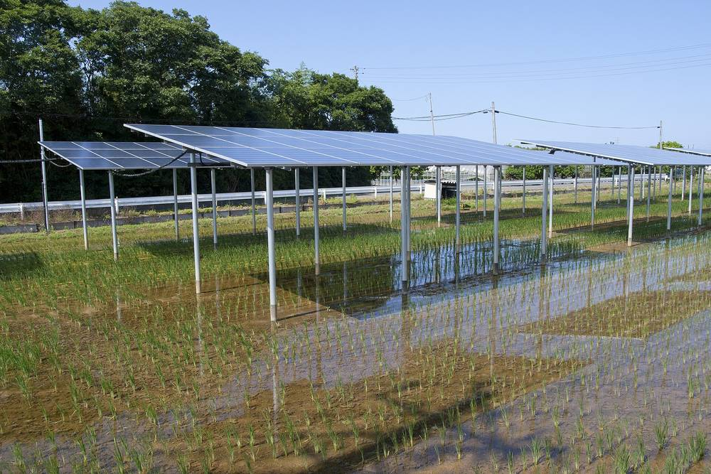
서울교통공사, 진접차량기지 옥상·주차장 4곳에 733.83kW 태양광 설치해 직접 사용…연 1억7,700만 원 절감 예상
부지를 민간에 빌려주던 방식 대신 공사가 생산 전력을 직접 쓰는 첫 차량기지 사례…연 83만5,000kWh 발전·온실가스 384톤 감축 예상, 시민 출자 없는 공공기관 직영 자가용 설비

영국 셰필드시, 시영주택 최대 5,257채 지붕 빌려줘 태양광·배터리 설치 추진…212채는 기후투자채권 등 167만 파운드로
2030년 4월까지 모든 시영주택 에너지등급 C 이상 의무…외부 기업이 투자하는 '서비스형 에너지' 방식, 세입자 연락관 두고 추운 집부터
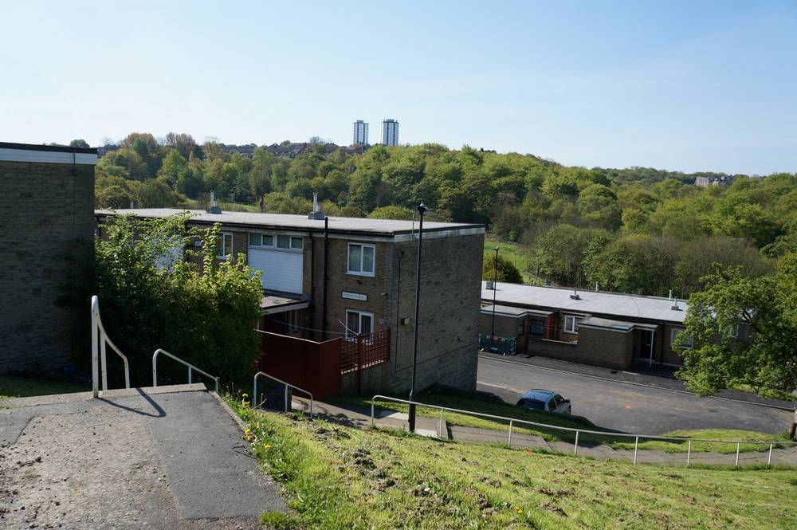
이헌승 의원, 주민참여 태양광 274건 20년 예상 수입 중 REC가 약 48%라며 햇빛소득마을 전기요금 부담 공개 요구
에너지공단 자료 분석…20년 전력판매 4조109억 원·REC 약 3조7,200억 원 추산, 기후에너지환경부·에너지공단 반론은 아직 안 나와

보성농협 조합장, 영농형 태양광 걸림돌로 담보 대출·고령 주민 자부담 꼽아…농협이 자부담 맡는 방식 언급
농협이 7년 전 설치한 벼농사 영농형 태양광 현장…선로 확보·햇빛마을 금융지원·규제 개선이 과제로

새만금희망태양광 99MW, 주민참여 두 갈래 검토했지만 전북도민 펀드는 금감원 지역 제한 지적에 막혀
총사업비 1,575억 원, 2021년 12월 상업운전…반경 1km 주민 약 63억 원 규모 주민법인 투자 추진, 회사는 연 6억6,100만 원 지역 기부·전북 중고생 장학금 설명
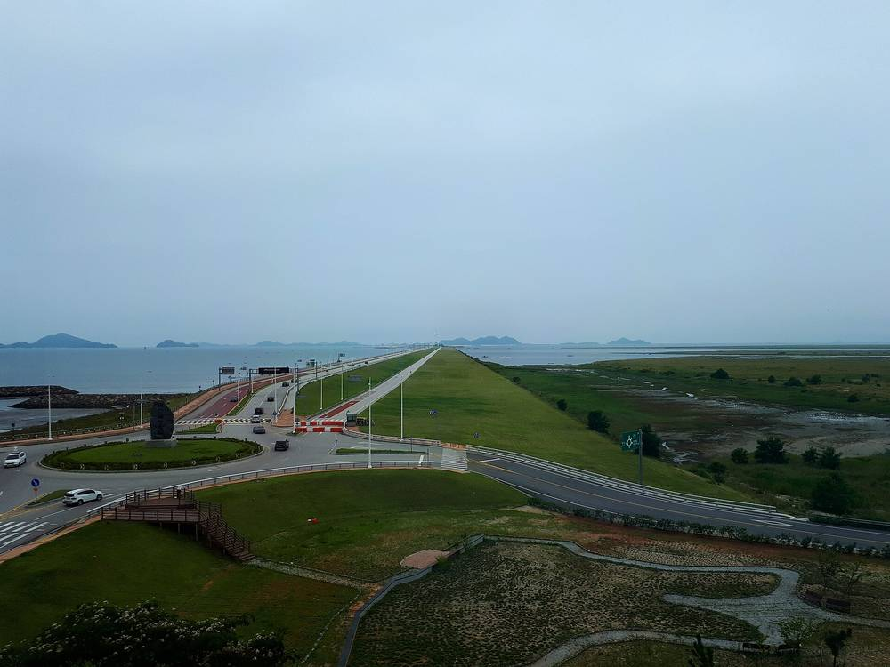
내년 RPS 대신할 재생에너지 새 계약시장, 해상풍력 투자·주민참여 사업 수익성 쟁점…REC 가중치 역할 이어받을지가 관건
정부가 발전원별 물량·상한가격 제시 뒤 경쟁입찰·한전 장기 고정가격 계약…해상풍력 단가 kWh당 330원대에서 2035년 150원 이하 목표, 업계는 먼바다 비용 반영 요구

마이크로소프트, 한국 반도체 공급업체에 한국 안에서 무탄소 전력 조달 요구
브룩필드 한 곳과 10.5GW 등 전 세계 재생에너지 설비 40GW 계약…한국 재생에너지 발전 비중은 10% 안팎으로 세계 평균의 3분의 1에도 못 미쳐

메가특구 법안 속 원전 전력 직접구매(PPA) 허용 조항 논란…기후부, 동의 곤란에서 신중 접근으로 표현 바뀌어
박해철 의원 자료 공개, 허용 여부는 아직 미정…월성 2호기 전력을 한 기업에 모두 공급하면 다른 수요자의 대체 전력 구입비가 약 3,800억 원 늘 수 있다는 의원실 추산

이탈리아 시칠리아 그람미켈레, 공공임대주택 168호에 1,700만 유로 에너지 개보수…태양광 달고 재생에너지공동체로 60여 가구 요금 할인
공공임대주택 기관 IACP 재원으로 잔드리토 지역 단열·창호·지붕 개선과 태양광·태양열 설치, 입주 가구 에너지 비용 최소 30% 절감 목표
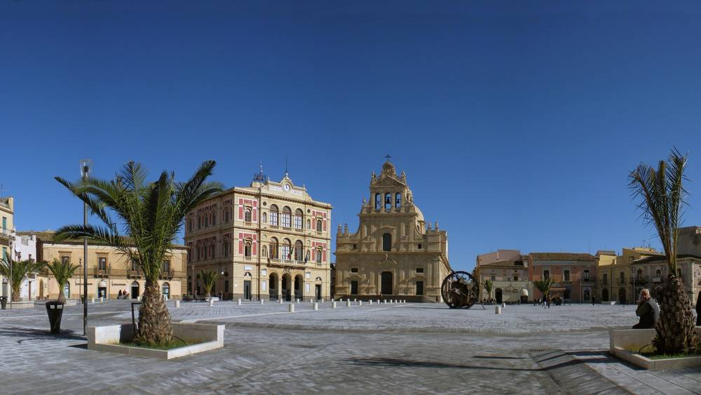
독일 크레펠트 에너지협동조합, 더 많은 시민 참여 위해 출자 1좌 가격 절반으로 내린다
2018년 설립, 조합원 120명 출자로 지붕 태양광 5곳 운영…옛 벨벳 공장 14kWp에서 노인요양시설 80kWp까지

경기도, 내년 사회연대경제 예산 56.5% 깎은 편성안…경기도사회적경제원 사업비 0원
사회혁신경제국 소관 567억 원에서 247억 원으로, 사업 51개는 31개로…도비 사업은 신청액 절반만 반영, 11월 도의회 심의

RE100 PPA 중개플랫폼에 구매 585MW 몰렸지만 계약은 아직 0건…중소·중견기업 앞엔 20년 계약·신용도 벽
23일 기준 판매 456MW·구매 585MW 등 1,041MW 등록, 지난달 7일 기준 협상 5건·협약 3건에도 최종 계약 없어…단기 PPA·신용 보강 금융지원·가격정보 공개 요구

미국 뉴욕주 리버헤드, 닫은 매립장 위 태양광 7MW·배터리 13.68MWh 완공 앞둬…요금 크레딧 60%는 주민·소상공인 120여 곳 몫
읍은 땅 빌려주고 크레딧 40%와 연 임대료 15만 달러 이상 받아…민간 개발사 CVE가 짓고 25년 운영
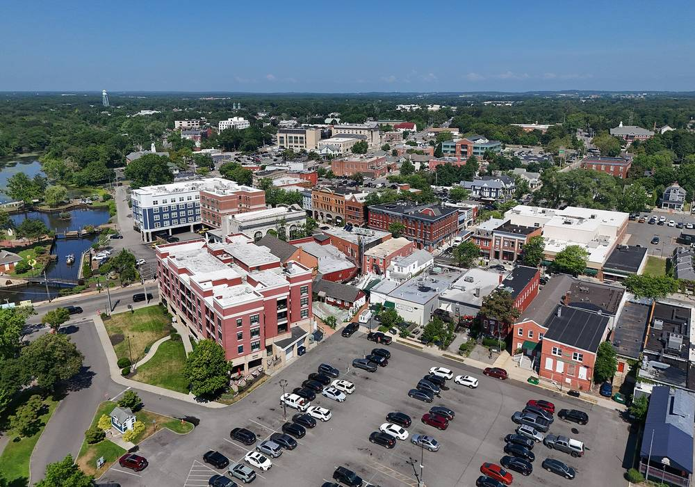
대한태양광발전사업자협회장, 지역별 한계가격제는 사업자에게 책임 전가라고 주장…소매요금 지역 차등 인상을 대안으로
곽영주 회장, 송전망 모자란 지역 도매가 하락은 낮에 발전하는 태양광에 더 큰 타격이라고 주장…자기 돈과 대출로 지은 노후 대비 소규모 사업자 많다며 유예기간·경과조치 갖춘 예측 가능한 정책 요구

첫 법정 재생에너지의 날, 태양광 사업자들 지역별 도매가격제 반대 시위
서울 코엑스 기념식장과 나주 전력거래소 LMP 설명회장에서 도입 유예·재검토와 기후부 장관 사퇴 요구…송전망 부족 책임을 발전사에 떠넘긴다는 주장, LNG·석탄 민간 발전업계도 우려

캐나다 원주민 경제개발법인 합작사 Aurora Renewables, 올해의 원주민 청정전력 회사 선정…사스캐처원 첫 태양광 통합 마이크로그리드
캐나다재생에너지협회 2026 시상…원주민 인력만으로 지은 디샴호 마이크로그리드는 하루 전력 약 80%를 태양광으로, 노바스코샤 148.5MW 풍력은 혁신 사업상
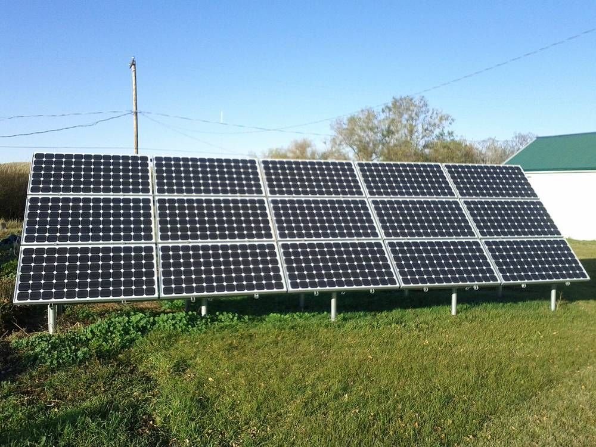
영국 워킹 시의회, 직접 소유한 에너지회사 ThamesWey 요금 인상에 청사 에너지비 32만6,000파운드 늘어
오랫동안 묶였던 상업용 요금을 시장 기준에 맞춰 재조정…일반 전력망 연결 비용이 커 공급사 못 바꿔, 시는 소유주라도 특혜 없어야 한다는 입장
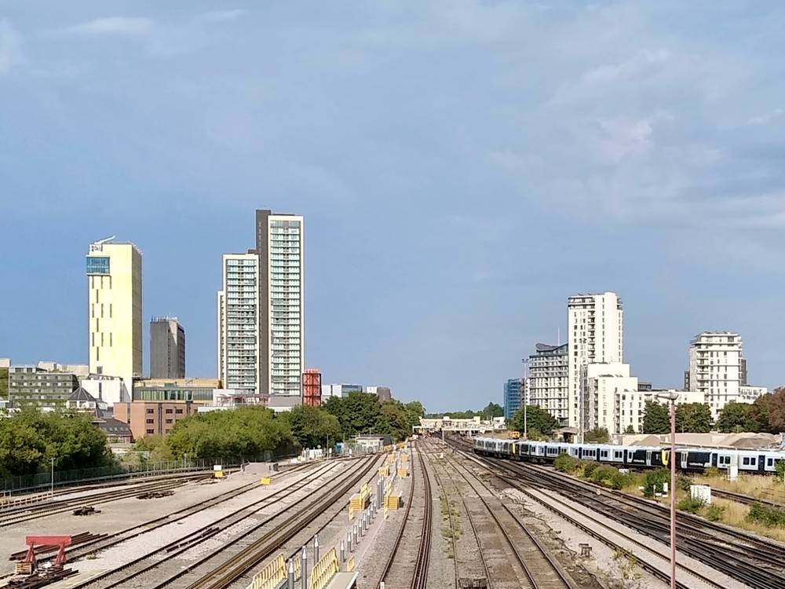
캐나다 토론토 바이오가스 협동조합 ZooShare, 시민 공동체 채권으로 400만 달러 넘게 모아
동물원 분뇨와 안 팔린 식료품으로 전기 생산…첫 모집 220만 달러에 약 300명 참여, 조합원 약 800명이 1인 1표로 운영
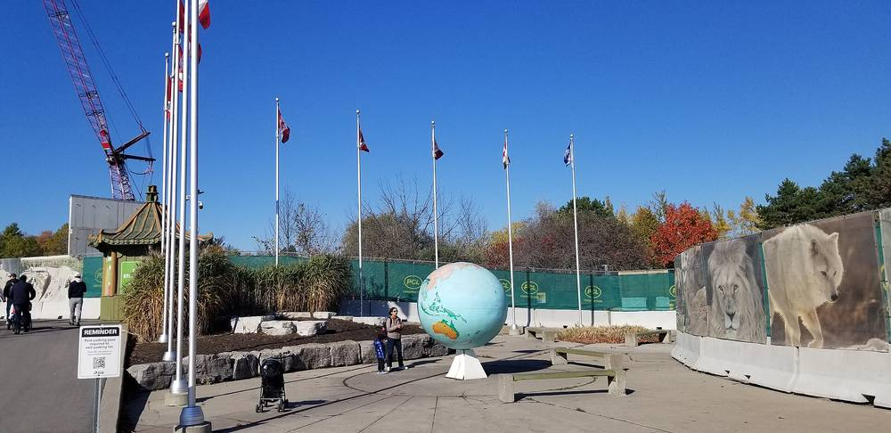
미국 벨빌시, 버려진 묘지 땅 공동체 태양광 임대계약 해지 나서…투자자 빠져 사업 무산
1달러에 사들인 마운트호프 묘지 옆 숲 약 20에이커 베어 태양광 지으려다 주민 소송…계통 보강 대금 160만 달러 납부 이틀 전 주 투자자 이탈
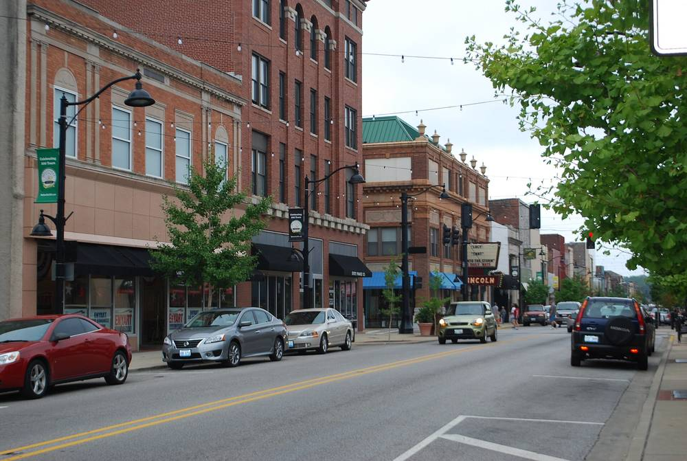
캐나다 토론토 동물원 옆 바이오가스 협동조합, 시민 채권으로 400만 달러 넘게 모아 발전소 운영
조쉐어 협동조합 첫 모집 220만 캐나다달러에 약 300명 참여…조합원 약 800명·1인 1표, 연 약 1만5,000t 음식물·분뇨로 약 250가구분 전력
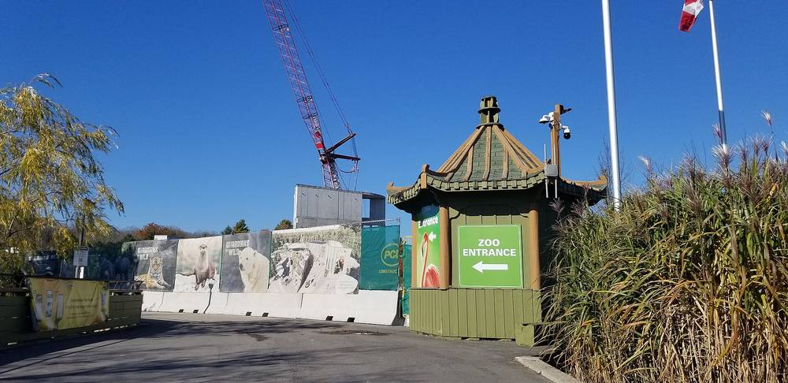
경기도, 사회연대경제기본법 시행 앞두고 전담 사회혁신경제국 폐지 추진
조직개편안 입법예고…경제부지사 산하 6개 실·국을 3개로, 경제산업실 분장사무엔 사회연대경제 한 줄만 남아
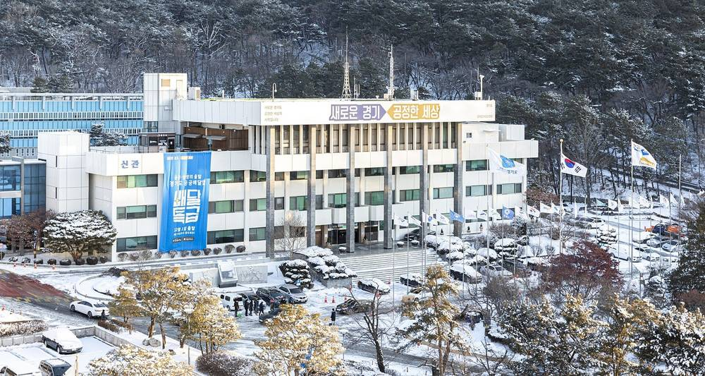
미국 오하이오 도시들, 매립지·저수지·교회 지붕 태양광으로 전기요금 오름세에 대응
1년 새 주택용 요금 12% 상승…신시내티 매립지 10MW 착공, 라이마 저수지 수상태양광 2MW 가동
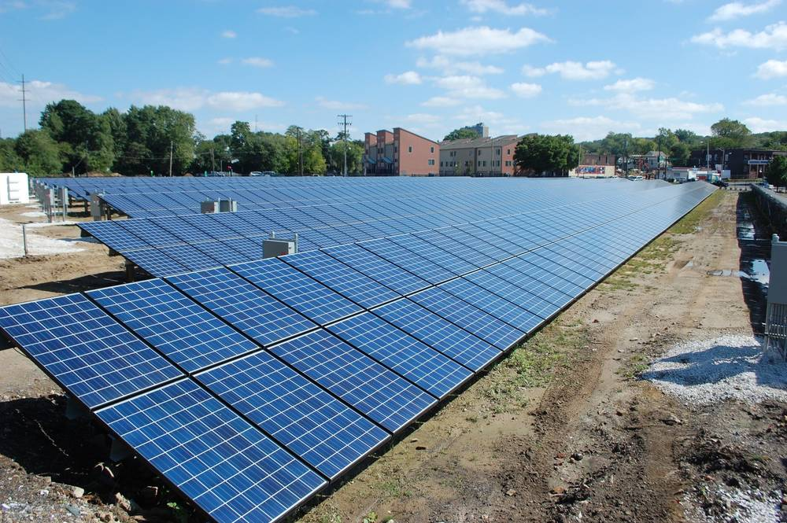
곡성군, SK이터닉스·유선기업과 육상풍력·태양광 협약…군민펀드 도입 검토
기업은 사업 개발·입지, 군은 행정 지원 맡기로…발전용량·사업비·부지·수익 배분 방식은 아직 정해지지 않아
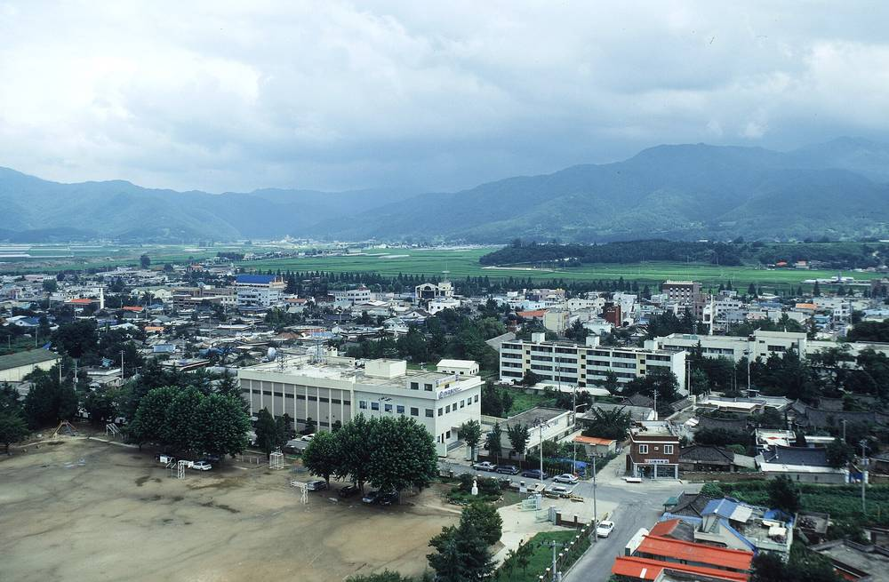
햇빛소득마을은 늘리는데 주민참여 REC 가중치는 내년 종료…우대가격 수준은 아직 미정
정부 목표 올해 700곳·2030년 3천곳 이상…전남광주 125곳 선정, 경과 규정으로 일부는 새 제도 밖

김해시, 공영주차장 14곳·정수장에 태양광…발전 수익 재투자하는 재정 순환 구조 만든다
2028년까지 공영주차장 2,700kW 설치, 7곳은 직영·7곳은 민간 임대…삼계정수장 500kW는 12월 준공 목표
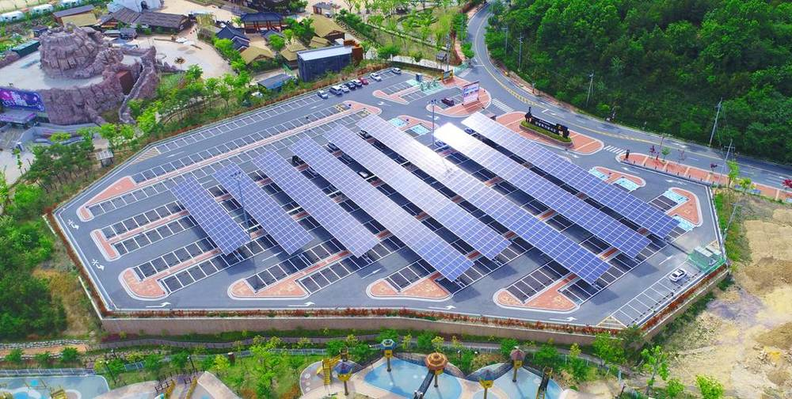
서부발전, 대전 산업단지 공장 지붕에 태양광 13MW 이상…20년 운영하며 수익 일부 지역 환원
산단 에너지자급자족 사업 협약, 입주기업 20곳 이상 고효율 설비 교체 지원…군산 산단 11.69MW에 이어 두 번째

전남도, 내부 검토서 영농형 수익 40% 감소 예상하고도 해남 부동지구 1GW 태양광 추진
사업비 1조7,840억 원, 솔라시도 산단·데이터센터 전력 공급 구상…농지 사용 승인 3년 넘도록 방식·사업자 못 정해

영농형 태양광 농가 예상 순수익, 1년 새 999만 원에서 624만 원으로…37% 낮아져
100kW 기준 농식품부·영농형태양광협회 추정…발전 매출 2,256만 원→1,950만 원, 설치비 1억5,500만 원→1억7,000만 원, 12월 특별법 시행 앞둬

전재수 부산시장 후보 측, 시민에너지 단체들과 RE100 생태경제도시 정책협약
2026년 5월 18일 캠프 정책간담회…재생에너지 개발 50% 이상 시민주도·공공부지 시민 우선 개발 담아

신안 주민참여 태양광, 가입비 1만 원에 수백만 원 배당…주민 실투자 비중은 낮아
안좌도·자라도 120MW, 주민 몫 140억 원은 협동조합 대출로…거리 따라 1인 연 68만~204만 원
産業・経済
米ミネソタの電力協同組合クロウ・ウィング・パワー、組合員に約300万ドルを還元…11月の電気料金から差し引き
2010年分の出資配当111万1,000ドルに、卸売協同組合が割り当てた1992～1998年分182万7,000ドルを加える
カナダ・カルガリーの電気・ガス小売会社、利益の100％を地域の性的少数者団体へ…「料金が共同体の基金に」
社会的企業Q-TILITIES、代表は無給で5年以内に10万ドル以上の還元目標
米アナハイム市営電力、太陽光150MW・蓄電池138.5MWの20年購入契約…約9億5,500万ドル
市議会が7対0で承認、約7万5,000世帯分…蓄電池性能が3か月連続90%を下回れば代金支払わず
太陽光発電所3万9,312カ所が集中する全北、地域別の電力卸売価格差別化に「非常事態」…発電団体の共同対策委が25日に決起大会
全国の発電所の17.7％・設備4,984MW…模擬分析で首都圏と非首都圏にkWh当たり10.6ウォンの差、27日の改正委員会で通過すれば法的対応
江原道が108億ウォンを現物出資した大関嶺風力団地、年間純利益3億ウォンにとどまる…道議会の監査で「経済性と住民被害を改めて検証せよ」
江原開発公社が運営する団地の予想売上は21億ウォン…維持補修費や人件費が上がれば収益はさらに減る恐れ、騒音・低周波・シャドーフリッカーなど社会的費用も指摘
SH賃貸団地の屋根の太陽光、昼に余った電気は管理費に戻るのか…オ・ジュンソク・ソウル市議「料金相殺の現況を公開し、12月末までに転換計画を」
LHが世宗の幸福住宅238世帯で共同住宅初の料金相殺を始めたのを受け、同じZEB3等級の高徳オンビッチェ697世帯の事例を追及…相殺できない団地は理由のリストから
米ウィスコンシン州の電気料金、民間電力会社は2020年以降29%上昇…公営14%・協同組合15%の2倍
年8,000kWh使う世帯で民間1,513ドル・協同組合1,313ドル・市営1,025ドル
イタリア・トルトーナに科学技術パーク主導の再エネ共同体…「参加者の電気料金を25～40%削減」
最初の発電所は約200kWで始め750kWまで拡大…トルトーナ一帯の18のコムーネが対象、2026年末の稼働目標
英シェトランド「捨てられる風力の電気で島民の電気料金を下げる」…議会主導の「シェトランド・コミュニティ電力プロジェクト」始動
世帯の40%がエネルギー貧困なのに、103基のバイキング風力は送電が詰まり停止することも…GBエナジー・Ofgem・SSEなどが作業部会に参加、2028年から試行事業を目標
ニューヨーク市に「市営の再エネ開発公社」を…市民団体の報告書「公共蓄電池200MWだけで料金を年1億7,000万ドル削減」
気候・公共電力の3団体が「PowerNYC」を提案…学校・病院・公営住宅の屋根に太陽光・蓄電池・地域熱網を直接開発し、収益を再投資する自立型の公共開発者
独ケルン・オッセンドルフ、エネルギー協同組合と住宅協同組合が435世帯に賃借人向け太陽光…蓄電池670kWhで電気料金を約10%安く
建物55棟の屋根に750kW、団地の電力の約半分を屋根から…協同組合「2027年のEEG改正で小規模な賃借人電力は建てられなくなる」
BHESCo、イーストボーン全域へ「ソーラー・パワード・コミュニティーズ」を拡大…電気料金を最大25%安くすることを目標に
持ち家世帯・賃借人・地域の事業所が対象…オフジェムのエネルギー補償基金で運営
龍仁市政研究院「半導体のRE100需要を市民の所得に」…市民投資・住民参加・公共資産太陽光を盛り込んだ利益共有モデルを提案
イシューリポート「YRI Insight 119号」…発電収益の共有、施工・保守への住民参加、政策金融と市民投資の連携、隣接市郡との広域協力など5つの方策
韓国の信用協同組合「信協」、市民太陽光から洋上風力・「日差し所得村」まで再エネ金融を拡大…村の発電施設資金を最大85％融資
安山市民太陽光発電協同組合の発電所60カ所建設を支えた経験を生かし、高敞洋上風力に1,000億ウォンの連携融資、エネルギー公団の利子補給で村の負担軽減
イタリアのセッティ教授、隣同士で分け合う太陽光の電気を公共財に…法定固定価格を導入すれば電気料金20〜30%減
ボローニャ大学教授が11日のラヴェンナ講演を前に提案を説明…約45万か所の二次変電所の下の共有電力を市場から切り離し1kWh8.5セントを例示、送配電料金も使った区間分だけ
チェコの風力の村3カ所「騒音・健康の懸念は現実にならず」…収益は投資家と結んだ条件次第、ごみ手数料を廃止した村と一度きりで終わった村
グルナは2006年から4基・ヴェジュニツェは2009年から2基・アネンスカー・ストゥダーンカは6基、住民の苦情なし…景観への反対は残り、3村とも「着工前の住民との対話と投資家選びが最も重要」
セマングム水上太陽光300MW、再公募の応札ゼロで不成立…直接PPAの需要先確保と共用施設負担金1,386億ウォンが壁に
初回公募は1社のみ、30MW事業も不成立で13日まで再公募…「条件緩和と需要先確保の時間が必要」との指摘
アプリで集めた個人投資家2万2,000人、工場屋根の太陽光7,000カ所に4,000億ウォン超を投資
エイチエナジー「モヘッ」、投資金で協同組合を設立し工場屋根に発電所…企業は安い電気、投資家は売電収益の配当
米カリフォルニア州メサ・グランデ部族、初の公共太陽光・蓄電池が完成…年60MWhを発電、電気料金を年1万6,780ドル削減
非営利団体SELFが設計・資金調達、部族民4人を雇用…最大150戸の住宅計画の第1段階12戸は2028年春まで
米メリーランド州ハワード郡長、太陽光事業のハードルを上げる議会条例に拒否権…「エネルギー自立と料金負担の軽減を損なう」
当初は太陽光の新規事業を一時停止する案として出発、農地保全委員会の承認権限を強めた修正案で可決されたが差し戻し
米イリノイ州チェリーバレーで7.4MWのコミュニティ太陽光が稼働…賃借人や小規模事業者も加入すれば電気代約10%節約
700余りの世帯・店舗分の電力、開発会社はコミュニティ便益協定で村のEV充電所に15万ドルを拠出
地域別卸価格制を阻止へ…太陽光・風力・市民発電協同組合など8団体が共同対策委を結成し政府説明に反論
政府「スポット市場の太陽光の99.5%が1MW以下、月平均精算が可能」…対策委「件数比率にすぎず売上保護ではない」、25日世宗・27日ソウルで集会予定
オーストリア・グントラムスドルフのエネルギー共同体、2027年の送電網料金案に反発…「共有電気の割引が縮小」
規制機関E-Controlの案は確定ではない…共同体「近隣間の割引率57%→49%」、意見提出は11月20日まで
市民と社会連帯経済の組織が共同出資する「価値金融信協」設立へ…11日に国会でフォーラム
社会住宅・医療介護・再生可能エネルギーに資金を供給する構想…国会議員5人が共催、行政安全部・信協中央会が後援
韓国西部発電、国家技術標準院庁舎の駐車場・屋上に太陽光を推進…年1,614MWhの発電を見込む
5日に業務協約…遊歩道など利用の少なかった庁舎敷地を活用、西部発電が敷地の適合性検討・段階別事業計画を担当…設備容量・事業費・収益の使い道は明らかにせず
「屋根がない住民にも太陽光の電気料金の恩恵を」…米ウェストバージニア州で「コミュニティ・エネルギー」立法を求める寄稿
遊休地の共同太陽光を複数の加入者が分け合う制度…筆者ら「24州で成果、州議会は動くべき」
イタリア・ヴァッレ・スクリーヴィアの年金生活者労組、「再生可能エネルギー共同体（CER）推進委員会」の結成を提案…山間部の人口減少・料金負担に対応
Spi Cgilジェノヴァ・リグーリア、11月5日にブザッラで公開討論会…市民・企業・自治体を束ねてCERを広げる構想、委員会はまだ提案の段階
米コロラド州の4市が共同所有する公営卸電力会社PRPA、「2030年カーボンフリー電力100%」の期限を削除…2027年の卸料金は平均7.5%値上げ
10月29日の理事会で議決、カーボンフリー目標そのものは維持…2030年のカーボンフリー比率は80%強の見通し、「これ以上払うつもりはない」住宅顧客は48%で2021年の36%から増加
イタリアのエネルギー協同組合ènostra、2029年までに自前の発電を3倍・組合員2万8,000人目標…新規発電投資450万ユーロは組合員の出資で
10月末の組合員向けウェビナーで2026~2029年戦略計画を発表…顧客への供給電力は約60GWh→100GWh、出所を追跡できる電力の比率は20%→40%、「社会的企業」への転換も検討
米オークランド港の公営電力会社、2025年の供給電力の84%が再エネ・ゼロカーボン…港側「民間電力会社より料金が平均約40%安い」
港が直接運営する「Port Public Power」、水力・バイオガス・地熱を他の公営電力の都市と共同で調達…テナントの電化で増える需要に備え新たな変電所も建設中
スペイン・テルエル初の社会的経済賞、農村のエネルギー協同組合オプティメネルに「社会的経済発展貢献賞」
ルコ・デ・ヒロカでコミュニティによるエネルギー管理モデルを牽引した功績…候補15件から5部門を表彰、農村の移動・空き家・繊維リサイクル事業も受賞
モルドバ議会、エネルギー共同体法を第2読会で可決…住民・自治体・マンション所有者協会が参加する非営利団体、利益の配当を禁じ再投資へ
会員の自治体は所有する不動産やエネルギーインフラを共同体に使わせることが可能に…官報掲載の1か月後に施行、既存の共同体は24か月以内に新規定へ再編
スロベニア・ポドレフニク、学校と庁舎の屋根の太陽光で公共施設をまとめて共同体自家供給…庁舎の冬の電気代は約2,500ユーロから123ユーロ余りに
2基合計200kW余り、事業費25万5,000ユーロ弱のうち補助金15万6,000ユーロ弱…下水処理場・ポンプ場・充電スタンドにも電力を供給、年間効果は暫定で約4万2,000ユーロ
国会でエネルギー基本権討論会…料金支援を超え最低保障基準・参加権・便益共有権の法制化を提案
ソ・ワンジン議員が主催、環境正義のコ・ジェギョン共同代表はエネルギー転換への参加権・情報権・便益共有権を、エネルギー経済研究院のキム・ジェギョン先任研究委員は基本エネルギーと供給停止防止のエネルギー法明記を提案
ソウルの水道水づくりに電気料金891億ウォン…アリス本部の再エネ調達1.3%、温室効果ガス削減は目標未達
モク・ソヨン・ソウル市議が行政事務監査で指摘…電力の90%は浄水センターのポンプ、高効率インバーターは4カ所のみ、来年の排出権購入費は約2億5,000万ウォンの見通し
ドイツ・ゾーリンゲンの住宅協同組合、屋根の太陽光414kWpで182世帯に「テナント電力」…事業者「基本料金より最低10%安く」
組合は屋根を貸すだけで供給会社が設置・運営し、組合の資本投入なし…2027年春には37世帯の暖房もヒートポンプに、工事費の家賃転嫁を防ぐ
韓国の祖国革新党、超広域特区法案を党論として発議…再生可能エネルギー事業では総事業費の4%以上を住民に投資機会として優先提供
住民・労働者が参加する相生協議会、送配電の共同接続設備への国の支援を盛り込み、週52時間制の例外や持株会社規制の緩和は除外…規制特例には5年の有効期間、発議段階
ニュージーランド・アシュバートン地区議会、上がる電気料金で太陽光を検討…年40万ドル節約に500万ドル超の先行投資で議員の意見割れる
年間電気代は約177万ドル、来週からの長期計画予算審議で部署ごとの太陽光案を検討…「その金は道路に回すべきか」対「建物の屋根に少しずつ」
国民の力、来年度予算の削減対象に「日差し所得村など再生可能エネルギー」・協同組合・社会連帯経済事業を挙げる
予算決算特別委員ら「再エネ1兆8,210億ウォンは増額中毒、協同組合819億ウォン・社会連帯経済633億ウォンは身内予算」と主張…日差し所得村単独の削減額は示さず…政府は同日の予算案提案説明で日差し所得村の拡大など再エネ普及予算の倍増を説明したが、名指しに直接答えた反論はまだ
ブラジル・ニテロイ市、土砂崩れの危険がある丘に市営太陽光約1.5MW…電気は学校・保育所の料金相殺に、工事要員の20%は地元住民
7月4日完成のボア・ヴィスタの丘太陽光パーク、工費770万レアルで年160万レアルの節約と試算…植生回復・雨水貯留で斜面も安定、すぐそばに住む住民の電気料金は変わらず
米オハイオ州アセンズ、住民投票で電気料金に上乗せした炭素料金で毎年約10万ドルを集め公共太陽光に
2018年導入、平均的な世帯の負担は月2ドル未満…望まなければ抜けられるが大半が残り、旧兵器庫の太陽光や公共プールの変圧器交換に充てる
イタリア・ポンペイアーナ市、学校・市役所・公営駐車場の太陽光と再生可能エネルギー共同体（CER）を一括した民間投資入札…工事費65万7,099ユーロ、21年契約
コンセッション全体の推定価値141万1,638ユーロ、市が事業者に毎年2万9,585ユーロを支払う仕組み…応札は11月27日締め切り・30日開札、提案者の優先権はEU判決を受けて廃止
龍仁市政研究院「再生エネルギーの恩恵は市民に」…市民投資・住民の雇用・公共資産の太陽光を盛り込んだ「龍仁型利益共有モデル」を提案
イシューレポート「YRI Insight 119号」…半導体産業団地の電力設備は約15GWの見通し、市民協同組合・ファンドによる投資、送電網の影響を受ける住民への優先出資権を検討、公営駐車場51カ所のうち17カ所で太陽光計画提出
韓国南部発電・釜山港湾公社、釜山港の港湾用地で陸上風力の共同開発協約…洋上風力・太陽光・ESSへ広げる計画
南部発電は技術・財務面の事業性調査、港湾公社は用地提供と系統連系を担当…発電容量・事業費・位置・日程はまだ公表されず
同じダムの水上太陽光、陜川は住民1,400人余りの投資で稼働し龍潭は止まった…羅州湖9年の対立に照らした「住民の意見を聞く順序」
陜川ダムは郡と共に25人の住民協議体をつくり説明会・公聴会を10回余り（水資源公社資料）、龍潭ダムは事業者主導の説明会への反発の末に中断を通知…羅州湖は許可申請の後にようやく意見照会、農漁村公社・事業者・羅州市の回答はまだ
公共賃貸マンションの太陽光、使い切れなかった電気で管理費を減らす…LH、世宗サヌル村4団地238世帯で共同住宅初の料金相殺
太陽光246kWで月使用量の約49.1%を発電…LH「1世帯当たり月平均約8,000ウォンの追加節減を期待」、ZEB5等級以上の団地への拡大を検討
韓国の太陽光事業者団体、地域別卸売価格制が上程されれば直ちに仮処分申請へ…民間の石炭・LNG発電事業者も合流
地方企業の電気料金割引財源2兆8,000億ウォンのうち1兆5,000億～1兆8,000億ウォンを非首都圏の卸売価格引き下げで賄う構想に反発…協会は午後1時の販売単価39.1%下落と試算、政府は意見を検討する立場
フランス・プルイジの風力発電所、2009年に住民10人が3基のうち1基に出資…17年後「ほかの投資よりリスクが低い」
1人1株・1株200ユーロ、株主当座勘定の利息は年8%から…サン・ブリユー地域エネルギー気候庁、出資住民の経験を伝える見学会
フランス・ドルドーニュの混合経済会社SEM 24、広域自治体の土地に年5,150MWhの太陽光発電所が完成…地元の製菓工場に20年固定価格で直接販売
パネル7,668枚・事業費510万ユーロのうち60万ユーロはヌーヴェル＝アキテーヌ地域圏が支援、グラン・ペリグーは7haを30年の長期賃貸で提供し毎年使用料…送電網の飽和時の出力制限で蓄電池を検討
セマングム産業団地のRE100向け30MW太陽光、初回公募に応じたのは1コンソーシアムのみ…セマングム開発公社が13日まで再公募
公有水面約44万㎡に463億ウォンを投じて建設し完工後20年運営、国家産業団地5・6工区の入居企業と電力直接取引（PPA）…初回公募の参加が低調だった具体的な理由は不明
政府の「住民参加優良事例」翰林洋上風力、住民分のREC収益から住民社債の利息を先に差し引く…法律事務所3社が「法違反」との諮問意見
住民法人3社が購入した社債300億ウォンの年7%の利息を、加重値0.3の追加REC収益で賄い、残りだけを「利益共有」として支給…エネルギー公団「手続き中」、気候部「問題が確認されれば改善」、事業者「住民と約定、当局と協議中」
現代製鉄唐津製鉄所、駐車場2カ所に太陽光3.27MWが稼働…環境団体は再生可能エネルギーの大幅拡大を求める
61億ウォンを投じ特別目的法人が設置・運営し現代製鉄が借りて使う設備リース方式、年1,736トンの削減見込み…忠南環境運動連合「必要電力に比べれば始まりの段階」
ギリシャ、「エネルギー共有の権利」を盛り込んだ電力市場法案を議会に提出…別の建物でつくった太陽光の電気も家庭・中小企業・自治体が分け合う
法案第12条で電力法に第137Γ条を新設…6MW以下の設備は第三者が運営を代行、公共所有の設備は共有電力の平均10%以上を脆弱世帯に回すよう努める
コロンビア政府の「エネルギーコミュニティ」太陽光事業、パネルの見積価格が市場価格より高いとの問題提起…大半が進捗50%未満で年末までの延長を要請
2025年末に公営企業3社と契約17件・9,140億ペソ、2万8,544世帯にパネル6万221枚…政府・前次官「世帯当たり費用で見れば過大な費用はない」
フランス・ランド県サン＝ポール＝レ＝ダックス、旧廃棄物置き場に4.57MWcの市民太陽光…住民投資組織CIER40を別に設立
コミューンやエネルコープ・ヌーヴェル＝アキテーヌなどが事業会社に参加し、融資・公的資本・市民参加を組み合わせて400万ユーロ超を投資…ランド県は太陽光1,413MWでフランスの県で首位だが、エネルギー消費の削減は4.2%にとどまる
イタリア・モンセリチェ市、再生可能エネルギー共同体に「生産者組合員」として加入…公共建物の屋根の太陽光の利益をエネルギー貧困世帯の料金支援に
市議会の承認を経て共同体「モンテグロット・テルメ1」に参加、今後設ける市の建物の太陽光の電力を提供へ…使い道は地域委員会と共に決め、財団の支援3万ユーロで年内に設計・住民説明
ルーマニア・オクナ・ムレシュ市、市営太陽光で年590MWhを発電し市の消費444MWhを上回るも電気代は相殺しきれず…EU近代化基金に1.72MWhの蓄電設備事業を申請
昼はkWh当たり0.40～0.65レイで送電し、夜は1～1.30レイで買う価格差が原因…約50万ユーロの事業は実質全額の無償支援を見込み、市長は満充電なら街灯を一晩以上点灯できると説明
独ツィーメッツハウゼンの風車14基、投資会社は「30年で最大2,300万ユーロ」と試算…町長は反対、世帯あたりの電気割引は年45ユーロ
稼働後15年間は営業税がほぼなく、土地賃料は私有地の所有者へ…法定の自治体分担金年約28万2,000ユーロは町が納める郡分担金240万ユーロの10分の1余り
独バイエルン州エーゲンホーフェンの住民、ミュンヘン市営電力会社が建設中の7.2MW風車に協同組合の「固定金利ローン」で参加へ
隣町の市民エネルギー協同組合「マイザッハー・ラント」、5月の総会で活動地域を広げエーゲンホーフェン住民を優先募集…初の説明会に40人余り、風車は年末年始ごろ稼働予定
霊岩郡議会「ひだまり所得村、収益を分ける前に自己負担・ローン返済の基準を」…竹亭村の太陽光500kW・ESS 1.5MWhに14億ウォン
主要事業所の現地視察結果報告書で地方消滅対応基金・ローン利子支援・低金利の金融協約の検討を要求…霊岩では10村・9事業が条件付き選定、報告書の収益計画は村基金・弱者支援が各40%
米クリーブランドの市営電力、夏の停電後に料金値上げを要請…増収分を元手に2028年に3,000万ドルを借り入れ設備改修
120年の歴史を持つ市有電力会社CPP、固定料金の新設と使うほど割高になる料金体系を提案…地域の再生可能エネルギーによる自家発電も戦略計画に、市議会「改善の日程なしに承認は難しい」
台湾・屏東の赤山集落、古民家を改修したケア拠点の屋根に6kWの太陽光…浮いた電気代を高齢者の食卓に
住民が提供した空き家「老厝54」の改修時に環境保護局の勧めで設置、村長の試算で月約2万台湾ドルの電気代を半減…蓄電設備がなく停電時は使えず
1990年造成の釜山・新平長林産業団地に太陽光12.253MW・ESS 5MWh…南部発電コンソーシアム、2029年までに320億ウォン投入で協約
入居企業の屋根と公共の遊休地を活用、政府出捐金200億・地方費30億・コンソーシアム90億ウォン…運営収益は再投資し、釜山市と作った「ヘッビッ所得」モデルを適用する方針、地域の取り分はまだ示されず
坡州市、エネルギー転換フォーラムのエネルギー転換賞・地方自治部門を受賞…公共再エネの企業向け直接PPA、マンション向け節約電気料金制の推進を評価
10月28日の「2026エネルギー転換の夜」で授賞、市は基礎自治体として初の受賞と説明…企業への供給容量や電気料金の削減規模などの数字は発表になし
新韓資産運用、住民収益共有ファンドとエネルギーインフラ成長ファンドを計約5,000億ウォンで結成…住民ファンドの初の投資先に大規模洋上風力の住民参加事業を確保
発電団地周辺の住民・住民組合に持分・債券投資資金を供給し、発電収益の一部を配当・利息で還元する仕組み…住民ファンド単独の金額、初の投資事業名、住民向け金利・配当条件は発表されず
済州・翰林洋上風力の住民投資300億ウォンのうち200億ウォンは公団の政策融資…投資配当と道民への公共還元を分けるべきとの提案
近隣3集落の住民1,009人が協同組合で投資、低利融資の対象は距離・居住期間・漁業権被害で限定…楸子洋上風力の「住民優先、道民へ拡大」構想には金融コストの格差や配当から外れる懸念、地元日刊紙の企画連載最終回での提案
ベルリンの公営地域暖房会社BEW、欧州投資銀行から5億ユーロの融資枠…「2030年に石炭をやめ、下水熱の大型ヒートポンプへ」
第1弾2億5,000万ユーロに署名・最長25年…KfWの融資10億ユーロに続き2030年までに約35億ユーロを投資、上下水道公社の下水熱・清掃公社の焼却施設の蒸気を活用
米イプスウィッチの町営電力、住宅の断熱・ヒートポンプ費用を立て替え電気料金で10年無利子回収…来年1月「ReInvest」開始
農務省の融資500万ドルで約200世帯を見込む…節約額が費用の80％以上を賄う工事に限定、転居すれば残りの負担は次の居住者へ
ドイツ・ザーベックの地域熱供給網の住民総会に約230人…対象地域の455世帯を招き料金・技術と熱協同組合の設立を説明
自治体の幹部が10月28日夜、住民会館ビュルガーシャイネで熱供給網の候補地域の住民に事業を直接説明…町長は村のインフラにとって大きな一歩だと強調
スペイン・エル・プラットの「市民エネルギー共同体」、共有太陽光の屋根を4カ所から19カ所・1MWに拡大…昼間1,500世帯分、料金は小売事業者より50%安く
市役所40%・地元企業40%・利用者協会20%が出資を分け合う非営利法人…屋根も投資もなしに加入だけで参加、夜間供給のための共同蓄電池は規制に阻まれ試験段階
ドイツ・テュービンゲン市営エネルギー会社、初の市民直接投資商品…トラウフヴィーゼン太陽光発電所に500ユーロから、自社エネルギー顧客は年4%
「swt市民投資」は期間7～10年の劣後ローン方式、それ以外の市民は年3.5%…初回利払いは2027年12月31日、連邦道路B27沿いに1km以上続く同社最大の地上設置太陽光・蓄電池発電所
公共主導の洋上風力、全北で撤回・済州で不調が相次ぐ…仁川IC1は680MW・6兆4,612億ウォン、事業者未定のまま財源に「住民組合融資」2,584億ウォン
西部発電コンソーシアムが扶安の1GWから撤退、楸子2.37GW・済州西部181MWは不調…iH自己資本15%・一般融資団81%・住民組合融資4%の計画、出資限度は約1兆1,875億ウォン
韓国行政安全部、駐韓外交使節向け政策説明会に社会連帯経済を加え、横城・下大里の「日差し所得村」訪問を日程に
29～30日に江原道の原州・横城・洪川・春川一帯で開催、災害安全中心だった紹介範囲を政策全般に拡大…下大里は日差し年金協同組合を中心に住民65世帯が参加、1,000kWの太陽光を推進する計画
「公営駐車場の太陽光、市民はファンドの投資家ではなく事業の主体に」…チャン・シジョン塩田谷太陽光発電協同組合理事長、仁川40MWの公共SPCへの協同組合参加を求める
筆者「仁川市は2027年上半期にSPC設立の計画…設計段階から市民協同組合を入れるべき」、水原の東部バス公営車庫の協同組合発電所を手本に…市議会と市民発電協同組合ネットワークが「支援条例」を協議中
アルゼンチン・コルドバ州ベロタランの電力協同組合、初の太陽光800kWが完成…住宅用組合員の電気料金15〜20%引き下げを試算
発電量は組合が州電力公社から買う電気の約3分の1、11月の請求書から反映…コルドバでは配電協同組合と組んだソーラー・コミュニティ12カ所・11.4MW、企業は2027年に組合17団体で40MWを見込む
ドイツの気候自治体ザーベック、村のバイオガスと風力電気で温める地域熱供給網の料金を28日の住民集会で公表…中心部の建物455棟が対象
熱供給事業体ヴェルメヴェルク、11月から2027年3月まで接続の仮契約を受け付け…契約が十分に集まれば自治体議会が最終決定し接続率の高い通りから工事、初の熱供給は2028年末が目標
咸平郡、郡主導の計画立地で年2TWhの再生可能エネルギー供給を構想…事業者選定では価格とともに住民所得計画を反映
営農型500MW・一般400MW・建物100MWに隣接地域500MWの供給契約を検討…用地・許認可・系統・住民協議を郡が先に準備し営農型の収益共有モデルを用意、住民の持ち分や評価の比重は非公開
潭陽・竹林村の住民が協同組合を設立し1MWの日差し所得村を準備…予想売上2億4,000万ウォン余り、系統制約で4村をまとめるESSを検討
融資返済・維持費を除いた残りは組合員配当・村の基金・敬老堂の福祉に…ESSの予想設置費は1カ所当たり約80億ウォン、郡関係者の説明による分担は政府40%・民間30%・地方費30%で、まだ確定していない
平昌・雲頭嶺21MW風力の業務協定を締結…600億ウォンの事業に住民と郡が一部出資、住民は毎年投資額の10%程度を利子として受け取る
龍坪面老洞里の雲頭嶺一帯の風力団地、28日に風力開発業者・平昌郡・住民が協定…利子収入で集落の福祉を担う公共主導型事業は平昌で初めて、住民の投資総額・参加住民数・投資方式はまだ明らかでない
新韓銀行、発電所周辺住民の持分・債券参加資金を賄う1,700億ウォン規模の住民収益共有ファンドに500億ウォン投資
新韓資産運用が組成、住民が株主・貸付団として参加するための初期投資資金の調達を支援…金利・参加上限・投資対象事業は発表になし、着工前の開発段階を狙う3,000億ウォンの生産的金融ファンドにも2,000億ウォン
済州・翰林洋上風力の周辺3集落、総事業費の4.7%を出資して配当…楸子洋上風力は「住民が第1順位・道民が第2順位」の出資構想
既存の風力は当期純利益の17.5%を共有化基金に…楸子の再公募は年1,300億ウォンの固定条件に代わる方式を検討、2.37GWの電力を本土へ送るには海底連系線900MWの壁
米ブルックリンの24戸の住宅協同組合、追加負担金なしで屋根に太陽光…建物一括計量の差益で23万2,000ドルの融資を返済
サンセットパークのパークヒル、戸別の電力契約をなくし組合が電気を一括購入して組合員に小売料金で請求…再計量収入年7,000ドル・太陽光クレジット年7,000ドルと政府支援で返済、返済後の使い道は理事会が決定
ルーマニア・シビウ市、4.8312MWの市有太陽光発電所を契約…街灯など公共施設の電気料金を相殺
デアルル・ダイイの用地にEU近代化基金2,805万レイ、年間最低6,468.574MWh…2027年初めに着工し5カ月以内に稼働、余剰電力をためる蓄電池2,547万レイは別途申請
豪キンバリーの遠隔地6集落、屋根上太陽光183戸が495世帯の電気料金を軽減…3年間のクレジット約27万5,000ドル
西オーストラリア州営電力会社ホライズン・パワーの「キンバリー集落ソーラー・セーバー」が今月完了、約1.5MW・平均8.2kW…パネルのない隣家にも料金クレジット、軽油約12万2,000リットルを代替
イタリア・イヴレーアの125年続くエネルギー協同組合Aeg、ガス配管網をイタルガスに譲渡し売却代金をすべてカナヴェーゼ地域に再投資へ
組合員約2万人、過去2年に料金還元で100万ユーロを返還…広域入札制度で配管網の運営から撤退、再生可能エネルギー・社会事業を盛り込んだ事業計画を策定中、売却額は非公表
韓国営農型太陽光協会・韓国カーボンニュートラル農業協会、日差し所得村の共同推進で協約…営農型太陽光にカーボンニュートラル農業・集落の社会的経済を組み合わせる構想
23日に事業協力MOU、標準モデル開発・モデル村の発掘など7分野で協力…モデル村・事業費・収益配分はまだ決めず別途の協約で
ソウル交通公社、榛接車両基地の屋上・駐車場4か所に733.83kWの太陽光を設置し自家消費…年1億7,700万ウォンの節減見込み
敷地を民間に貸していた方式に代わり、公社が発電した電力を直接使う初の車両基地の事例…年83万5,000kWhを発電し温室効果ガス384トンを削減する見込み、市民出資のない公共機関直営の自家用設備
英シェフィールド市、公営住宅最大5,257戸の屋根を貸し出し太陽光・蓄電池の設置を推進…212戸は気候投資債など167万ポンドで
2030年4月までに全公営住宅にエネルギー性能C以上を義務化…外部企業が投資する「サービスとしてのエネルギー」方式、入居者連絡担当を置き寒い家から
イ・ホンスン議員、住民参加型太陽光274件の20年予想収入のうちRECが約48%と主張…太陽光所得村の電気料金負担の公開を要求
エネルギー公団の資料を分析…20年間の売電収入4兆109億ウォン・REC約3兆7,200億ウォンと推計、気候エネルギー環境部・エネルギー公団の反論はまだ出ていない
宝城農協の組合長、営農型太陽光の壁に担保融資と高齢住民の自己負担を挙げる…農協が自己負担を担う方式に言及
農協が7年前に設置した稲作の営農型太陽光の現場…送電線の確保、太陽光村への金融支援、規制改善が課題に
セマングム希望太陽光99MW、住民参加の2つの方式を検討も、全羅北道民ファンドは金融監督院の地域制限の指摘で頓挫
総事業費1,575億ウォン、2021年12月に商業運転…半径1km以内の住民による約63億ウォン規模の住民法人の投資を推進、会社は年6億6,100万ウォンの地域寄付と全羅北道の中高生への奨学金を説明
来年RPSに代わる再エネの新契約市場、洋上風力投資と住民参加事業の収益性が争点…REC加重値の役割を引き継げるかが鍵
政府が電源別の導入量と上限価格を示した後に競争入札・韓電と長期固定価格契約…洋上風力の発電単価を1kWh当たり330ウォン台から2035年150ウォン以下に下げる目標、業界は遠い海のコスト反映を求める
マイクロソフト、韓国の半導体サプライヤーに韓国国内でのカーボンフリー電力調達を要求
ブルックフィールド1社と10.5GWなど世界で再エネ設備40GWを契約…韓国の再エネ発電比率は10％前後で世界平均の3分の1にも届かず
メガ特区法案の原発電力直接購入（PPA）容認条項が論議に…気候部の表現、同意困難から慎重な接近へ
パク・ヘチョル議員が資料を公開、容認するかどうかは未定…月城2号機の電力を1社にすべて供給すれば他の需要家の代替電力購入費が約3,800億ウォン増えうるとの議員室試算
伊シチリア・グランミケーレ、公営住宅168戸を1,700万ユーロで省エネ改修…太陽光を設置し再エネコミュニティで60余世帯に料金割引
公営住宅機関IACPの資金でジャンドリット地区の断熱・窓・屋根を改善し太陽光・太陽熱を設置、入居世帯のエネルギー費を最低30%削減する目標
ドイツ・クレーフェルトのエネルギー協同組合、より多くの市民が参加できるよう出資1口の価格を半額に
2018年設立、組合員120人の出資で屋根置き太陽光5カ所を運営…旧ビロード工場の14kWpから高齢者施設の80kWpまで
京畿道、来年の社会連帯経済予算を56.5%削減する編成案…京畿道社会的経済院の事業費は0ウォン
社会革新経済局の所管予算は567億ウォンから247億ウォンに、事業数は51から31に…道費事業は申請額の半分のみ反映、11月に道議会で審議
RE100 PPA仲介プラットフォームに購入585MWが集まるも契約はまだ0件…中小・中堅企業には20年契約・信用度の壁
23日時点で販売456MW・購入585MWなど1,041MWが登録、先月7日時点で交渉5件・協約3件も最終契約なし…短期PPA・信用補完の金融支援・価格情報の公開を求める声
米ニューヨーク州リバーヘッド、閉鎖した処分場に太陽光7MW・蓄電池13.68MWh完成間近…料金クレジットの60%は住民・小規模事業者120余り
町は土地を貸してクレジット40%と年15万ドル超の賃料を受け取る…民間開発会社CVEが建設し25年運営
大韓太陽光発電事業者協会長、地域別限界価格制は事業者への責任転嫁と主張…小売料金の地域別引き上げ幅の差を代案に
クァク・ヨンジュ会長、送電網が足りない地域の卸売価格下落は昼間に発電する太陽光への打撃が大きいと主張…自己資金と借入で建てた老後対策の小規模事業者が多いとして、猶予期間・経過措置を備えた予測可能な政策を要求
初の法定再生可能エネルギーの日、太陽光事業者が地域別卸売価格制に反対デモ
ソウルCOEXの記念式会場と羅州の電力取引所LMP説明会会場で導入猶予・再検討と気候部長官の辞任を要求…送電網不足の責任を発電事業者に押し付けると主張、LNG・石炭の民間発電業界も懸念
カナダ先住民の経済開発法人の合弁会社Aurora Renewables、今年の先住民クリーン電力企業に選出…サスカチュワン州初の太陽光統合マイクログリッド
カナダ再生可能エネルギー協会の2026年表彰…先住民の人材だけで建設したデシャーム湖マイクログリッドは1日の電力の約80％を太陽光で賄い、ノバスコシア州の148.5MW風力は革新事業賞
英ウォーキング市議会、自ら所有するエネルギー会社ThamesWeyの料金引き上げで庁舎のエネルギー費が32万6,000ポンド増加
長く据え置かれていた商業用料金を市場水準に合わせて見直し…一般の送電網への接続費用が大きく供給会社を変えられず、市は所有者でも優遇はあってはならないとの立場
カナダ・トロントのバイオガス協同組合ZooShare、市民のコミュニティ債で400万ドル超を調達
動物園のふん尿と売れ残り食品で発電…初回募集220万ドルに約300人が参加、組合員約800人が1人1票で運営
米ベルビル市、放棄された墓地の土地でのコミュニティ太陽光の賃貸契約解除へ…投資家離脱で事業頓挫
1ドルで取得したマウントホープ墓地脇の森約20エーカーを伐採し太陽光を建てる計画に住民が提訴…系統増強費160万ドルの支払い2日前に主要投資家が撤退
カナダ・トロント動物園そばのバイオガス協同組合、市民債で400万ドル超を集め発電所を運営
ズーシェア協同組合の初回募集220万カナダドルに約300人が参加…組合員約800人・1人1票、年約1万5,000tの食品廃棄物・ふん尿で約250世帯分の電力
太陽光所得村は増やすのに住民参加のREC加重値は来年終了…優遇価格の水準はまだ未定
政府目標は今年700カ所・2030年に3,000カ所以上…全南光州は125カ所を選定、経過規定で一部は新制度の対象外
金海市、公営駐車場14カ所と浄水場に太陽光…発電収益を再投資する財政循環の仕組みづくり
2028年までに公営駐車場に2,700kWを設置、7カ所は直営・7カ所は民間賃貸…三渓浄水場の500kWは12月竣工を目指す
西部発電、大田の産業団地の工場屋根に太陽光13MW以上…20年運営し収益の一部を地域に還元
産業団地エネルギー自給自足事業で協約、入居企業20社以上の高効率設備への更新を支援…群山産業団地11.69MWに続き2カ所目
全羅南道、内部検討で営農型の収益40％減を予想しながら海南・富洞地区1GW太陽光を推進
事業費1兆7,840億ウォン、ソラシド産業団地・データセンターへの電力供給を構想…農地使用承認から3年を過ぎても方式・事業者は未定
営農型太陽光の農家予想純収益、1年で999万ウォンから624万ウォンへ…37％低下
100kW基準で農林畜産食品部・営農型太陽光協会が推計…発電売上2,256万ウォン→1,950万ウォン、設置費1億5,500万ウォン→1億7,000万ウォン、12月の特別法施行を控え
新安の住民参加型太陽光、加入費1万ウォンで数百万ウォンの配当…住民の実投資比率は低く
安佐島・チャラ島の120MW、住民分140億ウォンは協同組合の融資で…距離に応じて1人年68万〜204万ウォン
产业·经济
全北集中了39,312座太阳能电站，电力批发价格分区差别化令其“告急”——发电团体联合对策委25日举行誓师大会
占全国电站17.7%、装机4,984MW；模拟分析显示首都圈与非首都圈每千瓦时相差10.6韩元，若27日修订委员会通过将诉诸法律
江原道以108亿韩元实物出资的大关岭风电场年净利润仅3亿韩元…道议会监察："重新审视经济性和居民受害"
江原开发公社运营的风电场预计年销售额21亿韩元…维修费和人工成本上涨可能进一步压缩利润，噪音、低频、阴影闪烁等社会成本也被提及
SH租赁小区屋顶太阳能白天余电能否抵扣物业费…首尔市议员吴仲锡："公开电费抵扣现状，12月底前提交转换计划"
LH在世宗幸福住宅238户启动公寓首例电费抵扣后，追问同为ZEB三级的高德Onbitche 697户…无法抵扣的小区先列出原因清单
美国威斯康星州电价：民营电力公司2020年后上涨29%，是公营14%、合作社15%的两倍
以年用电8,000kWh的家庭计算，民营1,513美元、合作社1,313美元、市营1,025美元
英国设得兰"用弃风电力降低岛民电费"…议会主导的"设得兰社区电力项目"启动
40%家庭陷入能源贫困，拥有103台风机的维京风电场却因输电受阻时常停机…GB能源、Ofgem、SSE等加入工作组，目标2028年起开展试点
为纽约市设立"市属可再生能源开发公司"…民间团体报告称"仅建200兆瓦公共电池即可每年节省电费1.7亿美元"
三家气候与公共电力团体提出"PowerNYC"…在学校、医院和公共住房屋顶直接开发光伏、储能和区域热网，以收益再投资的自立型公共开发商
德国科隆奥森多夫，能源合作社与住房合作社为435户租户建屋顶光伏…配670kWh储能，电费便宜约10%
55栋楼屋顶共750kW，小区约一半用电来自屋顶…合作社警告：2027年EEG修订后小型租户电力项目将无法建设
龙仁市政研究院：“把半导体RE100需求转化为市民收入”…提出包含市民投资、居民参与和公共资产光伏的利益共享模式
专题报告《YRI Insight 第119期》…提出发电收益共享、居民参与施工与运维、政策性金融与市民投资联动、与邻近市郡广域合作等5项方案
韩国信用合作社“信协”将可再生能源金融从市民光伏扩展至海上风电和“阳光收入村”…村级发电设施资金最高可贷85%
凭借支持安山市民阳光发电合作社建成60座电站的经验，参与高敞海上风电1,000亿韩元联合贷款，能源公团贴息减轻村庄利息负担
意大利塞蒂教授提议将邻里共享的光伏电力视为公共物品…引入法定固定价格可使电费下降20%至30%
博洛尼亚大学教授在11日拉韦纳讲座前阐述提案…将约45万座二级变电站下的共享电力从市场剥离，举例每千瓦时8.5欧分，电网费用只按实际使用区段计收
捷克三个风电村庄："噪音和健康担忧并未成真"…收益取决于与投资者谈定的条件，有的取消垃圾费，有的只拿到一次性补偿
格鲁纳自2006年起4台、韦日尼采自2009年起2台、阿嫩斯卡·斯图丹卡6台，均无居民投诉…景观反对声仍在，三村一致认为"开工前与居民沟通、选择投资者最重要"
新万金300MW水上光伏再次招标无人投标流标…直接PPA需求方和1,386亿韩元公共设施分摊费成障碍
首次招标仅1家企业参与，30MW项目也流标、13日前重新招标…有意见认为"应放宽条件、给予确保需求方的时间"
通过应用程序募集的2万2,000名个人投资者，向7,000处工厂屋顶太阳能投入逾4,000亿韩元
H Energy"Mohaet"用投资款成立合作社在工厂屋顶建电站…企业用上便宜电力，投资者获得售电收益分红
美国加州梅萨格兰德部落首个公共太阳能与电池设施竣工…年发电60MWh，每年节省电费16,780美元
非营利组织SELF负责设计与筹资，雇用4名部落成员…最多150套住房计划的首期12套须在2028年春季前建成
誓阻地区批发电价制…光伏、风电、市民发电合作社等8个团体组成联合对策委员会反驳政府说明
政府称"现货市场光伏99.5%为1MW以下，可按月均价结算"…对策委："只是按场址数计算的比例，并非保护收入"，拟于25日在世宗、27日在首尔集会
奥地利京特拉姆斯多夫能源社区反对2027年电网费率草案…"共享电力折扣缩水"
监管机构E-Control的草案尚未确定…社区称"邻里间折扣率57%→49%"，意见提交截至11月20日
韩国西部发电推进在国家技术标准院办公区停车场和屋顶建设光伏…预计年发电1,614MWh
5日签署业务协议…利用步道等此前少有用途的办公区土地，西部发电负责场地适合性评估和分阶段项目计划…装机容量、项目费用和收益用途未公布
意大利斯克里维亚谷退休人员工会提议成立"可再生能源社区（CER）推进委员会"…应对山区人口减少和电费负担
Spi Cgil热那亚·利古里亚11月5日在布萨拉举行公开讨论会…设想联合市民、企业和地方政府推广CER，委员会尚处于提议阶段
美国科罗拉多州4市共有的公营电力批发商PRPA删除"2030年100%无碳电力"期限…2027年批发电价平均上调7.5%
董事会10月29日表决通过，无碳目标本身保留…预计2030年无碳占比略高于80%，表示"不愿多付钱"的住宅用户由2021年的36%增至48%
意大利能源合作社ènostra提出到2029年自有发电量增至3倍、社员达2万8,000人目标…450万欧元新增发电投资由社员出资筹集
10月底在面向社员的网络研讨会上发布2026~2029年战略计划…向客户供电由约60GWh增至100GWh，可追溯来源电力占比由20%升至40%，并研究转型为"社会企业"
美国奥克兰港公营电力公司2025年供电84%来自可再生和零碳能源…港方称"电价比私营电力公司平均低约40%"
港口直接运营的"Port Public Power"与其他公营电力城市联合采购水电、沼气和地热…为应对租户电气化带来的需求增长，也在新建变电站
西班牙特鲁埃尔首届社会经济奖，农村能源合作社Optimener获"社会经济发展贡献奖"
表彰其在卢科德希洛卡带动社区能源管理模式…从15个候选中评出5个类别，农村出行、空置房屋和纺织品回收项目也获奖
摩尔多瓦议会二读通过能源社区法…居民、地方政府和公寓业主协会共同参与的非营利协会，禁止分红、利润再投资
作为成员的地方政府可把自有不动产和能源基础设施交给社区使用…在政府公报刊登一个月后施行，现有社区须在24个月内按新规改组
斯洛文尼亚波德莱赫尼克用学校和政府楼屋顶光伏把公共设施捆绑成社区自给…政府楼冬季电费从约2,500欧元降至123欧元出头
两套设备合计200千瓦出头，投资不到25.5万欧元，其中补助不到15.6万欧元…还为污水处理厂、泵站和充电站供电，年效益初步估算约4.2万欧元
国会举行能源基本权讨论会…提议超越电费补贴，将最低保障标准、参与权和利益共享权写入法律
议员Seo Wang-jin主办，环境正义共同代表Ko Jae-kyung提出能源转型参与权、知情权和利益共享权，能源经济研究院高级研究委员Kim Jae-kyung建议在能源法中写明基本能源和防止断供
首尔生产自来水电费达891亿韩元…Arisu本部可再生能源采购仅1.3%，温室气体减排未达标
首尔市议员睦昭英在行政事务监查中指出…90%电力用于净水中心水泵，高效变频器仅装4处，明年排放权购买费用预计约2亿5,000万韩元
德国索林根住房合作社以414kWp屋顶光伏为182户供应"租户电力"…运营方称"比基本电价至少便宜10%"
合作社只出租屋顶，由供应商安装运营，合作社无需投入自有资本…2027年春37户供暖也将改用热泵，防止改造费用转嫁到房租
韩国祖国革新党以党论提出超广域特区法案…可再生能源项目须优先向居民提供总投资4%以上的投资机会
设立居民和劳动者参与的共生协议会，国家支持输配电共同接入设施，删除每周52小时工作制例外和控股公司规制放宽…规制特例设5年有效期，仍处提案阶段
新西兰阿什伯顿区议会因电费上涨研究光伏…年省40万元需先投入逾500万元，议员意见分歧
年电费约177万元，下周起的长期规划预算审议将讨论各部门光伏方案…"这笔钱是否该用在道路上"对"在建筑屋顶上一点点装"
国民力量党将"阳光收入村等可再生能源"、合作社和社会连带经济项目列为明年预算削减对象
预决算特别委员会委员称"可再生能源1.821万亿韩元属增额成瘾，合作社819亿韩元、社会连带经济633亿韩元是自己人预算"…未说明阳光收入村单独削减额…政府同日在预算案提案说明中表示阳光收入村推广等可再生能源普及预算将翻倍，但尚无直接回应点名的反驳
巴西尼泰罗伊市在滑坡风险山坡建约1.5MW市营光伏…电力用于抵扣学校和托儿所电费，20%施工人员为本社区居民
7月4日竣工的博阿维斯塔山太阳能公园，造价770万雷亚尔，预计每年节省160万雷亚尔…植被恢复和雨水收集同时加固山坡，紧邻居民的电费则没有变化
美国俄亥俄州雅典市通过公投在电费中加收碳费，每年筹集约10万美元建设公共光伏
2018年开征，普通家庭每月负担不到2美元…不愿缴纳者可退出但多数留下，用于旧军械库光伏和公共游泳池变压器更换
意大利蓬佩亚纳镇将学校、镇政府和公共停车场光伏与可再生能源社区（CER）打包进行社会资本招标…工程投资65.7099万欧元，合同21年
特许经营总估值141.1638万欧元，镇政府每年向运营商支付2.9585万欧元…11月27日截止投标、30日开标，依欧盟法院判决取消发起人优先权
龙仁市政研究院："可再生能源的好处应归市民"…提出包含市民投资、居民就业、公共资产光伏的"龙仁型收益共享模式"
议题报告《YRI Insight》第119期…预计半导体产业园区电力设施约15GW，提出市民合作社和基金投资、研究向受输电网影响居民提供优先出资权，51处公营停车场中17处已提交光伏计划
韩国南部发电与釜山港湾公社签署釜山港港区用地陆上风电共同开发协议…计划扩展至海上风电、太阳能和储能
南部发电负责技术与财务可行性研究，港湾公社负责提供用地和电网接入…装机容量、投资额、位置和时间表尚未公布
同样是大坝水上太阳能，陕川靠1,400余名居民投资投运，龙潭却停摆…以罗州湖9年纷争对照"征求居民意见的顺序"
陕川大坝与郡政府一起组建25人居民协议体，举办说明会和听证会10余次（水资源公社资料）；龙潭大坝在企业主导的说明会遭反对后通报中止…罗州湖在申请许可后才征求意见，农渔村公社、企业和罗州市尚未回应
公租公寓光伏用余电抵减物业费…LH在世宗山蔚村4区238户首次在共同住宅实施电费抵扣
246kW光伏发电量约占月用电量的49.1%…LH"预计每户每月平均再省约8,000韩元"，研究推广至ZEB 5级以上小区
韩国太阳能发电商团体拟在分区批发电价制度提交审议后立即申请禁令，民营煤电和LNG发电企业也加入
反对用压低非首都圈批发电价来筹措地方企业电费折扣资金2.8万亿韩元中1.5万亿至1.8万亿韩元的方案，协会测算下午1点售电单价下跌39.1%，政府表示将研究各方意见
法国普卢伊西风电场，2009年10名居民出资建成三台风机中的一台…17年后称"比其他投资风险更低"
每人一股、每股200欧元，股东往来账户利息从年8%起…圣布里厄地方能源气候署组织参观，分享出资居民经验
法国多尔多涅混合经济公司SEM 24在区域政府土地上建成年发电5,150MWh光伏电站…以20年固定价格直接售电给当地甜点工厂
光伏板7,668块，项目费用510万欧元中60万欧元由新阿基坦大区资助，大佩里格以30年长期租赁提供7公顷土地并每年收取使用费…电网饱和时出力受限，正研究加装储能电池
新万金产业园区RE100用30MW光伏项目首次招标仅1个联合体参与…新万金开发公社13日前重新招标
在约44万平方米公有水面投资463亿韩元建设、竣工后运营20年，与国家产业园区5·6工区入驻企业签订直购电协议（PPA）…首次招标参与冷清的具体原因尚未查明
政府"居民参与优秀案例"翰林海上风电从居民应得REC收益中先扣居民所购公司债利息…三家律师事务所咨询意见认为"违法"
三家居民法人认购的300亿韩元公司债年息7%由加权0.3的追加REC收益支付，余额才以"收益共享"名义发放…能源公团称"程序进行中"，气候部称"发现问题将改进"，企业称"与居民有约定，正与主管部门协商"
现代制铁唐津钢厂两处停车场3.27MW光伏投运…环保团体呼吁大幅扩大可再生能源
投资61亿韩元，由特殊目的法人建设运营、现代制铁租用的设备租赁模式，预计年减排1,736吨…忠南环境运动联合称"与所需电力相比只是起步"
希腊向议会提交含“能源共享权”的电力市场法案…其他建筑产生的光伏电力也可由家庭、中小企业和地方政府分享
法案第12条在电力法中新增第137Γ条…6MW以下设施可由第三方代为运营，公共所有设施应尽力把平均10%以上的共享电力分给弱势家庭
哥伦比亚政府“能源社区”光伏项目被指光伏板报价高于市价…多数进度不足50%，申请延期至年底
2025年底与3家国有企业签订17份合同、金额9,140亿比索，为2万8,544户安装6万221块光伏板…政府和前副部长称“按每户成本看不存在超额费用”
法国朗德省圣保罗-莱达克斯在旧废弃物堆放场建成4.57MWc市民光伏电站…另设居民投资组织CIER40
市镇与新阿基坦Enercoop等参与项目公司，结合贷款、公共资本和市民参与投资逾400万欧元…朗德省光伏装机1,413MW居法国各省之首，但能源消费仅减少4.2%
意大利蒙塞利切市以生产者成员身份加入可再生能源社区…公共建筑屋顶光伏收益用于补贴能源贫困家庭电费
经市议会批准加入社区Montegrotto Terme 1，将提供今后建在市政建筑上的光伏电力…用途由地方委员会共同决定，以基金会资助的3万欧元在年内完成设计和居民宣传
罗马尼亚奥克纳穆列什市的市营光伏一年发电590MWh、超过全市用电444MWh，电费却未能完全抵消…向欧盟现代化基金申请1.72MWh储能项目
原因在于白天以每kWh 0.40至0.65列伊上网、夜间以1至1.30列伊买电的价差…约50万欧元的项目力争获得几乎全额无偿资助，市长表示电池充满后可让路灯亮一整夜以上
德国齐梅茨豪森14台风机，投资方算出‘30年最多2,300万欧元’…镇长反对，每户电费优惠一年仅45欧元
投运后头15年几乎没有营业税，土地租金归私人地主…法定地方分成每年约28万2,000欧元，仅相当于该镇缴纳的县分摊款240万欧元的十分之一多
德国巴伐利亚埃根霍芬居民可通过合作社"固定利率贷款"参与慕尼黑市政电力公司在建的7.2MW风机
邻镇公民能源合作社"迈萨赫地区"在5月大会上扩大活动范围，优先招募埃根霍芬居民…首场说明会40余人到场，风机预计年底年初投运
灵岩郡议会："阳光收入村分配收益前，先定自付和贷款偿还标准"…竹亭村光伏500kW、储能1.5MWh投资14亿韩元
主要项目现场考察结果报告要求研究利用地方消亡应对基金、贷款贴息和低息金融协议…灵岩10个村9个项目获有条件入选，报告中的收益计划为村基金和弱势群体支援各40%
美国克利夫兰市营电力公司在夏季停电后申请涨价…以增收为基础2028年借款3,000万美元改造设施
拥有120年历史的市属电力公司CPP提议新设固定费并实行用电越多单价越高的结构…以本地可再生能源自行发电也写入战略计划，市议会称“没有改善时间表难以批准”
台湾屏东赤山社区老屋改建的关怀据点屋顶装6kW太阳能…省下电费用于长辈餐食
居民提供闲置老屋"老厝54"，修缮时经环保局建议设置，村长估算每月约2万新台币电费可省一半…尚无储能，停电时无法供电
1990年建成的釜山新平长林产业园区将建12.253MW太阳能和5MWh储能…南部发电联合体签约，至2029年投入320亿韩元
利用入驻企业屋顶和公共闲置用地，政府出资200亿、地方财政30亿、联合体90亿韩元…运营收益将再投资，并适用与釜山市共同制定的"阳光收入"模式，地方所得份额尚未公布
坡州市获能源转型论坛能源转型奖地方自治部门奖…推动公共可再生能源直供企业PPA和公寓节约电价制获肯定
10月28日"2026能源转型之夜"颁奖，市政府称这是基层地方政府首次获奖…企业供电容量和电费节省规模等数字未在公告中披露
新韩资产运用设立居民收益共享基金与能源基础设施成长基金，合计约5,000亿韩元…居民基金首个投资对象锁定大型海上风电居民参与项目
向发电园区周边居民和居民组合提供股权、债券投资资金，并以分红、利息形式返还部分发电收益…居民基金单独规模、首个投资项目名称及居民利率和分红条件均未公布
济州翰林海上风电居民投资300亿韩元中200亿来自公团政策贷款…有提议将投资分红与面向全体道民的公共返还分开
周边3个村庄1,009名居民以合作社方式投资，低息贷款对象按距离、居住年限和渔业权受损情况限定…楸子海上风电"居民优先、再扩大到道民"构想面临融资成本差距和分红排斥的担忧，为当地日报系列报道收官篇的建议
柏林公营区域供热公司BEW获欧洲投资银行5亿欧元贷款额度，"2030年告别煤炭，改用污水热大型热泵"
首批2.5亿欧元已签署、期限最长25年；继KfW 10亿欧元贷款之后，2030年前投资约35亿欧元，利用供水公司污水热和清洁公司焚烧厂蒸汽
美国伊普斯威奇市营电力先行垫付住宅保温和热泵费用，通过电费10年无息收回，"ReInvest"明年1月启动
以农业部500万美元贷款预计惠及约200户；只支持节省费用可抵消成本80%以上的工程，搬家后剩余负担由下一位住户承接
德国萨尔贝克区域供热管网居民大会约230人到场…邀请目标区域455户，介绍价格、技术和成立供热合作社
市镇领导层10月28日晚在村民会馆Bürgerscheune向供热管网潜在区域居民直接介绍项目…镇长强调这是村庄基础设施的一大步
西班牙埃尔普拉特"市民能源共同体"将共享光伏屋顶从4处扩至19处、达1MW…可满足1,500户白天用电，电价比售电公司低50%
市政府40%、本地企业40%、用户协会20%分持股份的非营利法人…无需屋顶和投资、加入即可参与，夜间供电所需的共享电池受法规限制仍处试点阶段
德国图宾根市营能源公司推出首个市民直接投资产品…投资特劳夫维森光伏电站500欧元起，本公司能源客户年息4%
“swt市民投资”为期限7至10年的次级贷款形式，其他市民年息3.5%…首笔利息2027年12月31日支付，电站沿B27联邦公路绵延1公里以上，是该公司最大的地面光伏加储能电站
公共主导海上风电在全北遭撤出、在济州接连流标…仁川IC1项目680MW、6兆4,612亿韩元，运营商未定，资金计划中含"居民合作社贷款"2,584亿韩元
西部发电联合体退出扶安1GW项目，楸子2.37GW和济州西部181MW流标…iH自有资本15%、普通银团81%、居民合作社贷款4%，出资上限约1兆1,875亿韩元
韩国行政安全部在驻韩外交使节政策说明会中加入社会连带经济，并安排参观横城下大里"阳光收入村"
29日至30日在江原道原州、横城、洪川、春川一带举行，介绍范围由灾害安全扩大到政策全领域……下大里以阳光年金合作社为中心，65户居民参与，计划推进1,000kW光伏
“公营停车场光伏，市民应是项目主体而非基金投资者”…盐田谷阳光发电合作社理事长张时正要求仁川40MW公共SPC吸纳合作社参与
作者称“仁川市计划2027年上半年设立SPC…应从设计阶段纳入市民合作社”，以水原东部公交公营车场合作社电站为范例…市议会与市民发电合作社网络正协商“支援条例”
阿根廷科尔多瓦省贝罗塔兰电力合作社首座800kW光伏电站落成…预计住宅社员电费下降15~20%
发电量约为合作社从省电力公司购电量的三分之一，11月账单起体现…科尔多瓦与配电合作社合作的"太阳能社区"已有12个、11.4MW，企业预计2027年17家合作社参与40MW项目
德国气候市镇萨尔贝克将在28日居民大会上公布以本村沼气和风电供热的区域供热管网价格…覆盖中心区455栋建筑
供热企业Waermewerk将于11月至2027年3月接受接网预签合同…若签约足够，由市镇议会作最终决定，并从接网率高的街道开始施工，首次供热目标为2028年底
咸平郡构想以郡主导的规划选址每年供应2TWh可再生能源…选定开发商时除价格外还将纳入居民收入计划
农光互补500MW、一般光伏400MW、建筑光伏100MW，另考虑以供电合同连接邻近地区500MW…由郡先行准备用地、许可、并网和居民协商并建立农光互补收益共享模式，居民持股和评分权重未公开
潭阳竹林村村民成立合作社筹备1MW阳光收入村…预计销售额2.4亿多韩元，因电网受限考虑建设串联4个村的储能设施
扣除贷款偿还和维护费后的余额用于社员分红、村公共基金和敬老堂福利…储能设施预计每处安装费约80亿韩元，据郡方相关人士介绍分摊比例为政府40%、民间30%、地方财政30%，尚未确定
韩国平昌云头岭21MW风电项目签署业务协议…600亿韩元项目由居民和郡政府出资一部分，居民每年可获约10%投资额的利息
龙坪面老洞里云头岭一带风电场，28日风电开发商、平昌郡与居民签约…以利息收入开展村庄福利的公共主导型项目在平昌尚属首次，居民投资总额、参与人数和投资方式尚未公布
新韩银行向1,700亿韩元规模居民收益共享基金投资500亿韩元，为发电站周边居民参与股权和债券筹措资金
由新韩资产运用设立，支持居民以股东或贷款团身份参与所需的初期投资资金…利率、参与上限和投资项目未在公告中披露，另向瞄准开工前开发阶段的3,000亿韩元生产性金融基金投入2,000亿韩元
济州翰林海上风电周边3个村庄出资总事业费4.7%获得分红…楸子海上风电构想由岛民第一顺位、道民第二顺位投资
既有风电将当期净利润的17.5%纳入共享基金…楸子重新招标研究取代每年1,300亿韩元固定条件的方式，2.37GW电力送往本土受制于900MW海底联网线
美国布鲁克林24户住房合作社不加摊派建成屋顶光伏…以整栋统一计量的差价偿还23.2万美元贷款
日落公园的Park Hill取消分户电力账户、由合作社统一购电再按零售电价向成员收费…以每年7,000美元转计量收入、每年7,000美元光伏抵扣额和政府补助还款，还清后用途由理事会决定
罗马尼亚锡比乌市签约4.8312MW市有光伏电站…抵扣路灯等公共设施电费
达伊山（Dealul Dăii）用地获欧盟现代化基金2,805万列伊，年发电量至少6,468.574MWh…2027年初开工后5个月内投运，储存余电的电池项目2,547万列伊另行申请
澳大利亚金伯利6个偏远社区，183户屋顶光伏为495户减免电费…3年抵扣额约27万5,000澳元
西澳州营电力公司Horizon Power的"金伯利社区太阳能节省"项目本月完工，约1.5MW、平均8.2kW…没有光伏板的邻居也获电费抵扣，替代柴油约12万2,000升
意大利伊夫雷亚125年能源合作社Aeg将燃气管网移交意大利燃气公司，出售所得将全部再投资于卡纳韦塞地区
社员约2万人，过去2年通过电费返还退还100万欧元…因区域招标制度退出管网运营，正在制定涵盖可再生能源和社会项目的产业计划，出售金额未公开
韩国农光互补协会与韩国碳中和农业协会签署阳光收入村共同推进协议…拟将农光互补与碳中和农业、村级社会经济相结合
23日签署业务合作MOU，在标准模式开发、示范村发掘等7个领域合作…示范村、项目费用和收益分配尚未确定，将另签协议
首尔交通公社在榛接车辆基地屋顶和停车场4处安装733.83kW光伏并自发自用…预计每年节省1.77亿韩元
不再把场地租给民间，而由公社直接使用所发电力，为其车辆基地首例…预计年发电83.5万kWh、减排温室气体384吨，属无市民出资的公共机构直营自用设施
英国谢菲尔德市拟出租最多5,257套市政住房屋顶安装太阳能和电池，其中212套由气候投资债券等167万英镑出资
2030年4月前所有市政住房须达到能效C级以上；采用外部企业投资的"能源即服务"模式，设租户联络员，优先照顾寒冷住房
韩国议员Lee Heon-seung称居民参与型光伏274个项目20年预期收入中REC约占48%，要求公开阳光收入村的电费负担
分析能源公团资料…推算20年售电收入4.0109万亿韩元、REC约3.72万亿韩元，气候能源环境部和能源公团尚未回应
新万金希望太阳能99MW曾研究两种居民参与方式，面向全罗北道居民的基金因金融监督院提出地域限制问题而受阻
总投资1,575亿韩元，2021年12月商业运行…曾推进由半径1公里内居民成立约63亿韩元规模居民法人进行投资，公司称每年向地方捐赠6亿6,100万韩元并为全罗北道初高中生提供奖学金
明年取代RPS的可再生能源新合同市场引发海上风电投资与居民参与项目收益争议，关键在于能否接替REC权重的作用
政府公布各电源装机量和上限价格后进行竞争招标，中标者与韩电签订长期固定价格合同…目标将海上风电成本从每kWh 330韩元级降至2035年150韩元以下，业界要求反映远海成本
韩国超大特区法案中允许直接购买核电(PPA)条款引发争议…气候部表态由难以同意转为需审慎对待
Park Hae-cheol议员公开相关资料，是否允许尚未确定…议员办公室估算，若月城2号机电力全部供给一家企业，其他用户的替代购电费用可能增加约3,800亿韩元
意大利西西里岛格兰米凯莱投入1,700万欧元对168套公共住房进行节能改造…安装光伏并通过可再生能源社区为60余户提供电价优惠
以公共住房机构IACP的资金改善Giandritto片区的外墙保温、门窗和屋顶，并安装光伏和太阳能热水设备，目标是使住户能源费用至少降低30%
京畿道明年社会连带经济预算编成案削减56.5%…京畿道社会经济院事业费为0韩元
社会革新经济局所管预算由567亿韩元降至247亿韩元，项目由51个减至31个…道费项目仅反映申请额的一半，11月道议会审议
RE100 PPA撮合平台吸引585MW购电需求，但签约仍为0件…中小及中坚企业面临20年合同和信用门槛
截至23日登记售电456MW、购电585MW等共1,041MW，截至上月7日虽有5件谈判、3件协议但无最终合同…业界呼吁短期PPA、信用增级金融支持和公开价格信息
美国纽约州里弗黑德封场垃圾填埋场上的7MW光伏与13.68MWh储能即将完工…60%电费抵扣额度归120多户居民和小商户
镇政府出租土地，获得40%抵扣额度和每年15万美元以上租金…由民营开发商CVE建设、运营25年
大韩太阳能发电业者协会会长称分区边际电价制度是把责任转嫁给业者…主张以零售电价分地区差别上调作为替代方案
Kwak Young-ju会长称输电网不足地区批发电价下跌对白天发电的太阳能打击更大…称许多小规模业者靠自有资金和贷款建站养老，要求制定有缓冲期和过渡措施、可预期的政策
韩国首个法定可再生能源日，太阳能发电商抗议分区批发电价制度
在首尔COEX纪念仪式现场和罗州电力交易所LMP说明会现场要求暂缓并重新审视引入、气候部部长辞职…称把输电网不足的责任转嫁给发电商，LNG和煤电民营发电行业也表示担忧
加拿大原住民经济开发公司参与的合资企业Aurora Renewables获评年度原住民清洁电力公司…建成萨斯喀彻温省首个光伏一体化微电网
加拿大可再生能源协会2026年度奖项…完全由原住民劳动力建造的Descharme湖微电网每天约80%电力来自太阳能，新斯科舍省148.5MW风电获创新项目奖
英国沃金市议会自有能源公司ThamesWey上调价格，市政楼宇能源费用增加32万6,000英镑
长期未调整的商业电价按市场基准重新核定…因接入公共电网成本过高无法更换供应商，市方称即使是股东也不应享受优待
美国贝尔维尔市着手解除废弃墓地土地社区光伏租约…投资者撤出致项目流产
以1美元购得的Mount Hope墓地旁约20英亩树林原拟砍伐建光伏，遭居民起诉…主要投资者在缴纳160万美元电网改造费前两天撤出
加拿大多伦多动物园旁的沼气合作社，靠市民债券筹得400多万加元运营电站
ZooShare合作社首期募集220万加元约300人参与…社员约800人、一人一票，每年用约1万5,000吨厨余和粪便发电，约供250户用电
西部发电在大田产业园区工厂屋顶建设13MW以上太阳能，运营20年并将部分收益回馈地方
签署产业园区能源自给自足项目协议，支持20多家入驻企业更换高效设备；继群山产业园区11.69MW之后的第二个项目
全罗南道内部评估预计农光互补收益减少40%，仍推进海南富洞地区1GW太阳能项目
项目投资1.784万亿韩元，拟向Solaseado产业园区和数据中心供电，农地使用获批3年多仍未确定方式和开发商
韩国农光互补农户预期净收益一年内从999万韩元降至624万韩元，降幅37%
农林畜产食品部与农光互补协会按100kW估算，发电收入2,256万韩元降至1,950万韩元，安装费由1.55亿韩元升至1.7亿韩元，特别法将于12月施行
Industry & Economy
Minnesota electric co-op Crow Wing Power returns almost $3 million to members as credit on November bills
About $1.111 million in 2010 capital credits plus $1.827 million assigned for 1992-1998 by its former wholesale co-op
Calgary power and gas retailer gives 100% of profits to local LGBTQ+ groups: 'bills become a community fund'
Social enterprise Q-TILITIES: founder takes no salary and aims to give back at least $100,000 within five years
Anaheim's city-owned utility signs 20-year deal for 150 MW of solar and 138.5 MW of batteries, worth about $955 million
Council approves 7-0; enough for about 75,000 homes, with no battery payment if performance falls below 90% for three straight months
Hampyeong pushes Bitgreen national industrial complex as RE100 pilot and Korea's first renewable self-reliant city
County plans to power the park with nearby solar and wind and expand its share to 3.3 million m²; the enabling special act is still under discussion
North Jeolla, home to 39,312 solar plants, on alert over regional wholesale power pricing; generators' joint committee to rally on Nov. 25
Province holds 17.7% of Korea's solar plants and 4,984MW; simulation shows 10.6 won/kWh gap between capital region and the rest, legal action if rule change passes on Nov. 27
Daegwallyeong Wind Farm, Backed by 10.8 Billion Won of Gangwon Province Assets, Earns Only 300 Million Won a Year; Provincial Councillors Call for Review of Economics and Harm to Residents
The farm run by Gangwon Development Corporation expects 2.1 billion won in annual revenue; rising maintenance and labour costs could cut profit further, and noise, low-frequency sound and shadow flicker were raised as social costs
Is Surplus Daytime Power From Rooftop Solar on SH Rental Estates Cutting Tenants' Fees? Seoul Councillor Oh Jung-seok Demands Net-Billing Data and a Conversion Plan by End of December
After LH began Korea's first apartment net billing at 238 'happy housing' units in Sejong, Oh asked about SH's 697-unit Godeok Onbitche, built to the same ZEB grade 3; complexes that cannot switch should be listed with reasons
Wisconsin power bills: investor-owned utilities up 29% since 2020, twice the rise at municipal (14%) and co-op (15%) utilities
For a home using 8,000kWh a year: $1,513 with investor-owned, $1,313 with co-ops, $1,025 with municipal utilities
Science Park in Tortona, Italy, Launches Renewable Energy Community, Projecting 25-40% Savings on Members' Bills
First plant of about 200kW to grow to 750kW, open to 18 municipalities around Tortona, with operation targeted by the end of 2026
Shetland Launches Council-Led "Community Power Project" to Turn Surplus Wind into Cheaper Electricity for Islanders
40% of households are in fuel poverty while the 103-turbine Viking wind farm is at times switched off by grid bottlenecks; GB Energy, Ofgem and SSE join working group aiming for trials from 2028
Advocates Urge New York City to Create a City-Owned Renewable Developer, Saying 200MW of Public Batteries Alone Could Save Ratepayers $170 Million a Year
Three climate and public power groups propose "PowerNYC" to build solar, storage and thermal energy networks on schools, hospitals and public housing, recycling revenue into new projects
Cologne's Ossendorf: Energy and Housing Co-ops Bring Tenant Solar to 435 Households, With 670kWh of Storage Cutting Power Bills by About 10%
750kW on the roofs of 55 buildings supplies about half the estate's electricity; co-op warns 2027 EEG reform would make small tenant-power projects unviable
BHESCo Extends Its Solar Powered Communities Programme to All of Eastbourne, Aiming for Electricity Up to 25% Cheaper
Homeowners, tenants and local businesses can all take part; programme runs on the Ofgem Energy Redress Scheme
Yongin Research Institute Proposes Turning Chipmakers' RE100 Demand Into Citizen Income Through a Profit-Sharing Model
Issue report YRI Insight No. 119 sets out five measures, including shared generation revenue, resident jobs in construction and maintenance, linking policy finance with citizen investment, and cooperation with neighbouring cities and counties
Korea's Shinhyup Credit Unions Widen Renewable Finance From Citizen Solar to Offshore Wind and 'Sunlight Income Villages', Lending Up to 85% of Village Plant Costs
Building on its support for the 60 plants of the Ansan citizens' solar cooperative, Shinhyup joins a 100 billion won syndicated loan for Gochang offshore wind, while an energy agency interest subsidy eases village borrowing costs
Italian Professor Setti Proposes Treating Solar Power Shared Between Neighbours as a Commons; Statutory Fixed Price Could Cut Bills 20–30%
University of Bologna professor outlines the idea ahead of an 11 November talk in Ravenna: take power shared under Italy's roughly 450,000 secondary substations out of the market at an example 8.5 cents per kWh, and charge grid fees only for the stretch used
Three Czech Wind Villages Say Noise and Health Fears Never Materialised, but Benefits Depend on Terms Struck with Investors, from Abolished Waste Fees to a One-Off Payment
Gruna has had four turbines since 2006, Věžnice two since 2009 and Anenská Studánka six for nearly two decades, with no resident complaints; landscape objections remain, and all three say early communication and choice of investor matter most
Saemangeum 300MW Floating Solar Fails Again as Rebid Draws No Bidders; Finding Direct PPA Buyers and 138.6 Billion Won in Shared Facility Charges Seen as Hurdles
Only one company joined the first round, and a separate 30MW project also failed and is being re-tendered until the 13th; calls grow to ease terms and give bidders time to secure buyers
22,000 Retail Investors Recruited by App Have Put Over 400 Billion Won into Solar on 7,000 Factory Roofs
H Energy's 'Mohaet' sets up a cooperative with investors' money to build plants on factory roofs; firms get cheaper power and investors get dividends from sales
Iksan to Pair Agrivoltaics With Sunlight Income Villages, Offering Finance and Storage Support Ahead of December Law
Mayor Choi Jeong-ho says panels cover around 20% of farmland and power income outweighs the loss; permits, installation costs and grid connection remain hurdles
California's Mesa Grande Tribe Completes First Public Solar and Battery System, Generating 60MWh a Year and Saving $16,780 Annually on Power Bills
Nonprofit SELF designed the project and raised funds, hiring four tribal members; the first 12 homes of a plan for up to 150 are due by spring 2028
Incheon's Geomdan 2 Industrial Park Mandates Rooftop Solar for Tenants From Planning Stage, Offers Roof Leasing and Low-Cost Power
Incheon Urban & Housing Corporation designs support to lower the RE100 hurdle for the 770,000㎡ park
Howard County, Maryland Executive Vetoes Council Bill Raising Hurdles for Solar Projects, Citing Energy Independence and Affordability
The bill began as a moratorium on new solar projects and passed in amended form giving the Agricultural Preservation Board a bigger approval role; it now goes back to the council
7.4 MW Community Solar Farm Comes Online in Cherry Valley, Illinois, Letting Renters and Small Businesses Cut Bills by About 10%
Enough for more than 700 homes and shops; developer gives the village $150,000 for EV chargers under a community benefit agreement
3,899.68kWp of Solar Approved for Two Saemangeum Industrial Park Tenants
Power to be supplied to Solvay Silica Korea and Eco&Dream under on-site PPAs, with installation due to finish by the end of this year
Eight Groups Including Solar, Wind and a Citizen Power Co-op Federation Form Joint Committee Against Locational Wholesale Pricing
Government says 99.5% of spot-market solar is under 1MW and can settle at monthly average prices; committee says that is a count of sites, not revenue protection, and plans rallies on the 25th in Sejong and the 27th in Seoul
German Citizen Solar Company Solarcomplex, Owned by 1,700 Shareholders, Signs 5-Year Fixed-Price Deal for Solar Plus Battery
4.5MW solar and 7.2MWh battery near Tengen... finding a market in an era of low power prices
Leek Entrepreneurs in the Netherlands Launch Energy Cooperative to Tackle Grid Limits
Energy storage and shared charging square under consideration... size, capital and membership not disclosed
Austria's Guntramsdorf energy community objects to 2027 grid tariff draft, says discounts on shared power would shrink
Regulator E-Control's draft is not final; community says neighbor-to-neighbor discount falls from 57% to 49%; comments due Nov. 20
Push to launch 'Value Finance Credit Union' co-owned by citizens and social solidarity economy groups; forum at National Assembly on the 11th
Plan to channel funds to social housing, health and care, and renewable energy; co-hosted by five lawmakers and backed by the interior ministry and the National Credit Union Federation
Korea Western Power to build solar on car parks and rooftops at Korean Agency for Technology and Standards; 1,614MWh a year expected
Agreement signed on the 5th to use little-used land on the agency's premises including walking paths; KOWEPO to assess site suitability and draw up phased plans; capacity, cost and use of revenue not disclosed
"Let residents without a roof share in solar savings": op-ed urges West Virginia to pass community energy law
Shared solar on unused land split among many subscribers; authors say it has worked in 24 states and lawmakers should act
Pensioners' union in Italy's Valle Scrivia proposes a 'Pro CER Committee' to spread renewable energy communities, citing depopulation and rising bills
Spi Cgil Genoa-Liguria held a public debate in Busalla on November 5 on linking citizens, businesses and municipalities to spread CERs; the committee is still only a proposal
Colorado's PRPA, a wholesale power provider owned by four cities, drops its 2030 deadline for 100% noncarbon electricity as wholesale rates rise 7.5% on average in 2027
Board voted on October 29 and kept the goal itself; noncarbon sources projected at just over 80% by 2030, and 48% of residential customers now unwilling to pay more, up from 36% in 2021
Italian energy cooperative ènostra aims to triple its own generation and reach 28,000 members by 2029, with €4.5 million of new generation funded by members
2026-2029 strategic plan presented to members in a late-October webinar: energy supplied to customers to rise from about 60GWh to 100GWh, traceable-source share from 20% to 40%, conversion to a 'social enterprise' under study
Port of Oakland's public utility sourced 84% of the power it delivered in 2025 from renewable and zero-carbon sources, and says its rates average about 40% below investor-owned utilities
Port Public Power, run directly by the port, buys hydropower, biogas and geothermal together with other public power cities, and is building new substations as tenants electrify
Teruel's first Social Economy Awards honour Optimener, a rural energy cooperative, for its contribution to the social economy
The cooperative was recognised for leading a community energy management model in Luco de Jiloca; five awards were chosen from 15 candidates, with rural mobility, empty-housing and textile-recycling projects also among the winners
Moldova's parliament passes energy community law at second reading: non-profit associations of residents, local governments and homeowners' associations, with no dividends and profits reinvested
Member local governments may let communities use their property and energy infrastructure; law takes effect one month after publication, and existing communities get 24 months to reorganise
Slovenia's Podlehnik links public buildings through school and town hall rooftop solar for community self-supply; town hall's winter power bill falls from about 2,500 euros to just over 123
Two systems total just over 200 kW and cost just under 255,000 euros, with just under 156,000 euros in grants; they also supply a wastewater plant, pumping station and charging point, with an estimated annual benefit of about 42,000 euros
National Assembly forum on energy rights proposes writing minimum guarantees, participation and benefit-sharing rights into law, beyond bill subsidies
Hosted by lawmaker Seo Wang-jin; Ko Jae-kyung of Environmental Justice proposed rights to participate in, be informed about and share the benefits of the energy transition, and Kim Jae-kyung of the Korea Energy Economics Institute called for basic energy and protection from disconnection to be set out in the Energy Act
Seoul spends 89.1 billion won a year on electricity to make tap water, yet its water authority sources just 1.3% from renewables and misses emission targets
Councillor Mok So-young raises the issue at an annual audit: pumps at treatment centres use 90% of the power, high-efficiency inverters are installed at only four sites, and emission allowance costs are projected at about 250 million won next year
Solingen housing cooperative supplies "tenant electricity" to 182 households from 414 kWp of rooftop solar, at least 10% below the basic tariff according to the supplier
The cooperative only leases its roofs while the supplier installs and runs the systems, so no cooperative capital is needed; heat pumps for 37 homes follow in spring 2027 to keep upgrade costs off the rent
Rebuilding Korea Party tables super-regional special zone bill as party policy, giving residents first right to invest at least 4% of total costs in renewable energy projects
Bill sets up co-prosperity councils with residents and workers and state support for shared grid connection facilities, while dropping the 52-hour workweek exemption and holding-company deregulation; regulatory exemptions would expire after five years, and the bill has only just been introduced
New Zealand's Ashburton council weighs solar as power bills rise, split over $5m-plus upfront cost to save $400,000 a year
Council spends about $1.77m a year on electricity; department solar proposals go to long-term plan budget talks next week — "spend it on roads?" versus "bite-size" rooftop panels
People Power Party targets "sunlight income villages and other renewables", cooperatives and social solidarity economy in next year's budget cuts
Budget committee members call 1.821 trillion won in renewables spending "addicted to increases" and 81.9 billion won for cooperatives and 63.3 billion won for the social solidarity economy "budgets for our own people"; no separate cut for the villages named; the government outlined a doubling of renewable deployment spending, including expanding the villages, in its budget presentation the same day, but no direct response to the targeting yet
Brazil's Niterói puts about 1.5 MW of municipal solar on a landslide-prone hill; power offsets school and daycare bills, and 20% of the workforce came from the neighbourhood
Morro do Boa Vista solar park, completed on July 4, cost 7.7 million reais and is expected to save 1.6 million reais a year; replanting and rainwater storage help stabilise the slope, but bills for residents next door stay the same
Athens, Ohio, raises about $100,000 a year for public solar through a carbon fee voters added to their electricity bills
Adopted in 2018, it costs the average household less than $2 a month; residents can opt out but most stay in, and the money has gone to solar on the old armory and a transformer upgrade at a public pool
Italy's Pompeiana bundles solar on its school, town hall and public car parks with a renewable energy community in one private-finance tender, with works of €657,099 and a 21-year contract
Concession valued at €1,411,638 overall, with the town paying the operator €29,585 a year; bids close on 27 November and open on the 30th, and the promoter's pre-emption right is dropped after an EU court ruling
Yongin Research Institute says renewable energy benefits should go to citizens, proposes a "Yongin-style profit-sharing model" with citizen investment, local jobs and solar on public assets
Issue report YRI Insight No. 119 projects about 15GW of power facilities for the chip industrial complexes and proposes citizen cooperative and fund investment, considers priority investment rights for residents affected by transmission lines, and notes solar plans submitted for 17 of 51 public car parks
KOSPO and Busan Port Authority agree to jointly develop onshore wind on port land, with plans to expand into offshore wind, solar and storage
KOSPO will run a technical and financial feasibility study while the port authority provides land and grid connection; capacity, cost, location and timetable have not been disclosed
Same dams, different outcomes for floating solar — 1,400 residents invested at Hapcheon while Yongdam stalled; what the "order of asking residents" means for Naju Lake's nine-year dispute
At Hapcheon Dam the water agency formed a 25-member residents' council with the county and held more than ten briefings and hearings (agency case material); at Yongdam a developer-led briefing met resistance and the project was halted. At Naju Lake residents were consulted only after the licence application, and the Rural Community Corporation, the developer and Naju City have yet to respond
Public rental flats use surplus rooftop solar to cut maintenance fees as LH launches its first apartment net billing at Sejong's Sanul Maeul Complex 4, home to 238 households
246kW of solar produces about 49.1% of monthly consumption; LH "expects an extra saving of about 8,000 won per household a month" and is considering extending the scheme to ZEB grade 5 or better complexes
Korean solar groups plan injunction the moment locational wholesale pricing is tabled; private coal and LNG generators join
They oppose a plan to cover 1.5 to 1.8 trillion won of a 2.8 trillion won regional industrial power discount by cutting wholesale prices outside the Seoul area; an association simulation shows a 39.1% price drop at 1 p.m., and the government says it will review stakeholders' views
Ten residents put money into one of three turbines at France's Plouisy wind farm in 2009; 17 years on, one calls it "less risky than other investments"
One share per person at 200 euros, with a shareholder current account whose interest started at 8% a year; the Saint-Brieuc local energy and climate agency held a site visit to share the investors' experience
Dordogne mixed-economy company SEM 24 opens 5,150 MWh-a-year solar park on regional authority land, selling power to local dessert factories at a fixed price for 20 years
7,668 panels and a 5.1 million euro budget, 600,000 euros of it from the Nouvelle-Aquitaine region; Grand Périgueux leases 7 hectares for 30 years in return for an annual fee; grid curtailment at times of saturation has the company studying battery storage
Only one consortium bids for 30 MW RE100 solar project at Saemangeum industrial complex; developer reopens tender until 13 November
Plant on about 440,000 square metres of public waters would cost some 46.3 billion won and run for 20 years after completion, selling power to tenant firms in zones 5 and 6 through direct PPAs; the specific reason for the weak first round has not been confirmed
Hallim offshore wind farm, a government 'model of resident participation', paid residents' bond interest out of their extra REC revenue; three law firms advised it breaches the law
The 7% annual interest on 30 billion won of bonds bought by three village corporations came out of revenue from the 0.3 REC bonus, with only the remainder paid as 'profit sharing'; energy agency says 'procedures under way', ministry says it will fix problems if confirmed, developer says it acted on an agreement with residents and is consulting authorities
Hyundai Steel starts 3.27MW of solar at two parking lots of its Dangjin steelworks; environmental group calls for far larger renewable build-out
KRW 6.1 billion leasing model in which a special purpose company builds and runs the arrays and Hyundai Steel rents them, with 1,736 tonnes of annual cuts expected; South Chungcheong environmental group says it is only a first step against the power needed
Greece tables electricity market bill with a "right to energy sharing", letting households, small businesses and municipalities share solar power produced at other buildings
Article 12 adds Article 137Γ to the electricity law; third parties may run schemes and own installations up to 6MW, and public bodies must make best efforts to direct on average at least 10% of shared power to vulnerable households
Colombian government's "energy communities" solar programme faces questions over panel quotes above market prices, with most projects under 50% complete and extensions to year-end requested
Seventeen contracts worth 914,000 million pesos signed with three state utilities in late 2025 for 60,221 panels serving 28,544 households; ministry and former vice-minister say "measured per household, there were no cost overruns"
Saint-Paul-lès-Dax in France's Landes builds 4.57MWc citizen solar plant on former waste storage site, with separate resident investment body CIER40
The commune, Enercoop Nouvelle-Aquitaine and others joined the project company, mixing loans, public capital and citizen participation in an investment of over 4 million euros; Landes leads French departments with 1,413MW of solar but has cut energy consumption by only 4.2%
Italian town of Monselice joins renewable energy community as a producer member, steering profits from solar on public roofs to energy-poor households' bills
Council-approved membership of the Montegrotto Terme 1 community will see power from future solar arrays on town buildings shared; local committees to help decide how benefits are spent, and a 30,000-euro foundation grant funds design and outreach this year
Romania's Ocna Mureș produced 590MWh from its municipal solar park in a year, more than the city's 444MWh consumption, yet could not fully offset its power bills; it has applied to the EU Modernisation Fund for 1.72MWh of storage
The gap comes from exporting daytime power at 0.40 to 0.65 lei per kWh and buying it back at night for 1 to 1.30 lei; the roughly 500,000 euro project seeks near-full grant funding, and the mayor says full batteries could light the streets for a night or more
Investor pitches 'up to 23 million euros over 30 years' for 14 wind turbines in Germany's Ziemetshausen; the mayor is opposed and the household power discount comes to 45 euros a year
Almost no trade tax in the first 15 years of operation and land rent going to private landowners; the statutory municipal levy of about 282,000 euros a year is just over a tenth of the 2.4 million euros the town pays in district levy
Residents of Egenhofen, Bavaria, can join Munich municipal utility's 7.2MW wind turbine through a co-op's fixed-interest loan
Neighbouring citizen energy cooperative Maisacher Land extended its area at its May general meeting and gives Egenhofen residents priority; more than 40 attended the first information evening, and the turbine is due online around the turn of the year
Yeongam county council tells solar income villages to set self-funding and loan repayment rules before sharing revenue; Jukjeong village plans 500kW of solar and 1.5MWh of storage for 1.4 billion won
A site-visit report asks the county to consider its local-decline response fund, loan interest support and low-interest finance agreements; 10 villages in Yeongam were conditionally selected for nine projects, and the report's revenue plan puts 40% each into a village fund and support for vulnerable residents
Cleveland's city-owned utility seeks rate increase after summer outages, plans to borrow $30 million in 2028 for upgrades
120-year-old Cleveland Public Power proposes a new fixed charge and higher per-kWh rates for heavier users; strategic plan includes more local renewable generation, while council members say they cannot approve rates without a timeline
Taiwan's Chishan village in Pingtung puts 6kW of solar on a restored old house used for elder care, spending the savings on seniors' meals
Panels went up on "Laocuo 54," an empty house donated by a resident, on the environmental bureau's advice during repairs; village chief estimates a monthly bill of about NT$20,000 is halved, but with no storage the power stops in a blackout
Busan's 1990-built Sinpyeong-Jangnim industrial complex to get 12.253MW of solar and 5MWh of storage as KOSPO consortium signs 32 billion won deal running to 2029
Rooftops of tenant firms and idle public land to be used, funded by 20 billion won in government grants, 3 billion won in local funds and 9 billion won from the consortium; operating income to be reinvested and shared under a "sunlight income" model made with Busan city, but the local share has not been spelled out
Paju wins the Energy Transition Forum's Energy Transition Award in the local government category for direct PPAs of public renewable power to firms and a money-saving apartment electricity plan
The award was presented at the "2026 Energy Transition Night" on October 28, and the city says it is the first basic-level local government to win; no figures such as supply capacity for firms or electricity bill savings were announced
Shinhan Asset Management closes resident profit-sharing and energy infrastructure funds totaling about 500 billion won, securing a large offshore wind resident-participation project as the residents' fund's first investment
The fund supplies money for equity and bond stakes to residents and resident associations near large power complexes and returns part of the power revenue as dividends or interest; the residents' fund's own size, the name of its first project and residents' rate and dividend terms were not announced
Of 30 billion won invested by residents in Jeju's Hallim offshore wind farm, 20 billion came from a state agency's policy loans, prompting a proposal to separate investor dividends from public returns to all islanders
1,009 residents of three nearby villages invested through a cooperative, but low-interest loans are limited by distance, length of residence and fishing-rights damage; the province's "residents first, then all islanders" plan for Chuja offshore wind raises worries about financing-cost gaps and people left out of dividends, says a proposal closing a local daily's series
Berlin's publicly owned district heating company BEW secures €500 million EIB loan facility to "end coal by 2030 and switch to large wastewater heat pumps"
First €250 million tranche signed with terms of up to 25 years; after €1 billion in KfW loans, about €3.5 billion to be invested by 2030, using wastewater heat from the water utility and steam from the city cleaning company's incinerator
Ipswich's municipal electric department to pay upfront for home insulation and heat pumps, recovered interest-free on bills over 10 years, as "ReInvest" starts in January
About 200 homes expected under a $5 million USDA loan; only upgrades whose savings cover at least 80% of their cost qualify, and any balance passes to the next occupant after a move
About 230 people turn out for Saerbeck's residents' meeting on a local heat network, as the German village invites 455 households to hear about prices, technology and a heat co-operative
Municipal leaders briefed residents of the potential network area in person at the Bürgerscheune hall on the evening of 28 October; the mayor called the network a big step for the village's infrastructure
El Prat's citizen energy community in Spain grows from 4 to 19 shared solar roofs and 1MW, enough for 1,500 households in daytime, at prices 50% below retailers
A not-for-profit company owned 40% by the city council, 40% by local organisations and 20% by a users' association; residents join without a roof or investment, while shared batteries for night-time supply are held back by regulation and still in a pilot
Tübingen's municipal energy company launches its first direct citizen investment product, from 500 euros in the Traufwiesen solar park, paying its own energy customers 4% a year
swt-BürgerInvest takes the form of a subordinated loan running 7 to 10 years, with other citizens earning 3.5% a year; first interest due 31 December 2027 from the company's largest ground-mounted solar and battery park, stretching more than 1km along federal road B27
Public-led offshore wind stalls in North Jeolla and Jeju; Incheon's 680MW IC1, a 6.46 trillion won project still without an operator, counts on 258.4 billion won in 'resident cooperative loans'
Western Power-led consortium quits 1GW Buan project, Chuja 2.37GW and Jeju West 181MW tenders fail; iH plans 15% equity, 81% bank syndicate and 4% resident cooperative loans, but its investment cap is about 1.19 trillion won
Korea's interior ministry adds the social and solidarity economy to its briefing for foreign diplomats, with a visit to a Hoengseong sunlight income village on the schedule
Held Oct. 29-30 around Wonju, Hoengseong, Hongcheon and Chuncheon in Gangwon, the briefing widens its scope from disaster safety to the ministry's broader policies; in Hadae-ri, 65 households are taking part through a sunlight pension cooperative that plans a 1,000kW solar project
"Citizens should own public car park solar, not just buy into a fund": Jang Si-jeong of Yeomjeongol Solar Cooperative calls for co-ops in Incheon's 40MW public SPC
Writer says Incheon plans to set up an SPC in the first half of 2027 and co-ops must be in from the design stage, citing a cooperative plant at Suwon's Dongbu bus depot; city council and citizen power co-op network are discussing a support ordinance
Electricity co-operative in Berrotarán, Córdoba, Argentina, inaugurates its first 800kW solar park and estimates a 15-20% cut in household members' bills
Output equals about a third of the power the co-op buys from the provincial utility, with savings showing from November bills; in Córdoba, 12 "solar communities" totalling 11.4MW have been built with distribution co-ops, and a developer expects 17 co-ops in a 40MW project in 2027
German climate municipality Saerbeck to unveil prices on 28 October for a local heat network fed by village biogas and wind power, covering 455 buildings in the centre
Heat company Waermewerk will take connection pre-contracts from November to March 2027; if enough sign up, the municipal council makes the final decision and streets with high take-up are built first, with first heat targeted for the end of 2028
Hampyeong County plans county-led siting to supply 2TWh of renewable power a year, weighing resident income plans alongside price when choosing developers
500MW of agrivoltaics, 400MW of general solar and 100MW on buildings, plus a 500MW supply contract with neighbouring areas under review; the county will prepare land, permits, grid and resident talks first and set up an agrivoltaic profit-sharing model, but resident stakes and scoring weights were not disclosed
Residents of Jungnim village in Damyang form a cooperative to prepare a 1MW sunlight income village; expected sales of over 240 million won, and grid limits push the county to consider an ESS shared by four villages
What remains after loan repayments and upkeep will go to member dividends, a village fund and senior-centre welfare; the ESS is expected to cost about 8 billion won per site, with a 40% government, 30% private and 30% local split described by a county official but not yet settled
Pyeongchang signs agreement on 21MW Undu-ryeong wind project; residents and county to invest part of 60 billion won cost, with residents receiving interest of about 10% of their investment a year
Wind farm around Undu-ryeong in Nodong-ri, Yongpyeong-myeon; developer, Pyeongchang County and residents sign on Oct. 28; first publicly led project in Pyeongchang to fund village welfare from interest income, but residents' total investment, number of participants and investment method not yet disclosed
Shinhan Bank puts 50 billion won into a 170 billion won resident profit-sharing fund that finances local residents' equity and bond stakes in power projects
Set up by Shinhan Asset Management to help residents near power plants raise the upfront money to join as shareholders or lenders; rates, individual limits and target projects were not announced, and a further 200 billion won goes into a 300 billion won fund for pre-construction development
Three villages near Jeju's Hallim offshore wind farm invest 4.7% of project cost and receive dividends; Chuja offshore wind plan envisions islanders first, other Jeju residents second as investors
Existing wind farms pay 17.5% of net profit into a sharing fund; the Chuja retender is weighing alternatives to a fixed 130-billion-won annual condition, and sending 2.37 GW to the mainland runs into a 900 MW subsea link limit
24-unit Brooklyn housing co-op adds rooftop solar without an extra assessment, repaying a $232,000 loan from the spread on a building-wide master meter
Sunset Park's Park Hill dropped individual utility accounts so the co-op buys power in bulk and bills shareholders at the retail rate; submetering revenue of $7,000 a year, $7,000 a year in solar credits and government incentives will repay the loan, after which the board decides how to use the money
Romania's Sibiu signs contract for 4.8312MW city-owned solar park to offset power bills for street lighting and other public facilities
EU Modernisation Fund money of 28.05 million lei for the Dealul Dăii site and at least 6,468.574MWh a year; work to start in early 2027 and finish within five months, with a separate 25.47 million lei bid for batteries to store surplus power
Rooftop solar on 183 homes cuts power bills for 495 households in six remote Kimberley communities, with about $275,000 in credits over three years
Western Australian state-owned utility Horizon Power completes its Kimberley Communities Solar Saver this month at about 1.5MW, averaging 8.2kW per system; neighbours without panels also get bill credits, and about 122,000 litres of diesel have been displaced
Ivrea's 125-year-old energy cooperative Aeg hands its gas network to Italgas and pledges to reinvest all proceeds in Italy's Canavese area
The cooperative of about 20,000 members returned 1 million euros through bill rebates over the past two years; forced out of network operation by area-wide tenders, it is drafting an industrial plan covering renewables and social projects, with the sale price undisclosed
Korea Agrivoltaic Association and Korea Carbon Neutral Agriculture Association sign pact to jointly pursue sunlight income villages combining agrivoltaics, low-carbon farming and village social economy
Business cooperation MOU signed on the 23rd covers seven areas including a standard model and pilot villages; pilot sites, project costs and revenue sharing are yet to be decided in separate agreements
Seoul Metro installs 733.83kW of solar on four rooftops and parking areas at Jinjeop depot for its own use, expects to save 177 million won a year
Instead of leasing sites to private firms, it is the operator's first depot to use the power it generates directly; it expects 835,000kWh a year and a 384-tonne cut in greenhouse gases, from a publicly owned self-consumption system with no citizen investment
Sheffield plans to rent out roofs of up to 5,257 council homes for solar panels and batteries, with £1.67 million including climate investment bonds for 212 homes
All council homes must reach energy rating C by April 2030; the "energy as a service" model relies on outside business investment, and a tenant liaison officer will start with the coldest homes
Lawmaker Lee Heon-seung says RECs make up about 48% of 20-year expected revenue from 274 resident-participation solar projects and calls for disclosure of the electricity bill burden of Sunlight Income Villages
Analysis of Korea Energy Agency data estimates 4.0109 trillion won from power sales and about 3.72 trillion won from RECs over 20 years; no response yet from the climate ministry or the agency
Boseong co-op head cites collateral and elderly residents' upfront costs as barriers to agrivoltaics, floats the co-op covering their share
At a rice-paddy agrivoltaic plant the agricultural cooperative installed seven years ago, grid lines, financing for solar villages and deregulation are named as tasks
Saemangeum Hope Solar's 99MW plant weighed two resident-participation routes, but a fund for North Jeolla residents was blocked by the financial regulator's regional-limit concerns
KRW 157.5 billion project in commercial operation since December 2021; a resident corporation of about KRW 6.3 billion for people within 1km was pursued, and the company says it donates KRW 661 million a year locally and funds scholarships for North Jeolla students
Korea's new renewable contract market replacing the RPS next year puts offshore wind investment and resident-participation returns in question, with much riding on whether it takes over the role of REC multipliers
Government will set volumes and price caps by technology, followed by competitive auctions and long-term fixed-price contracts with KEPCO; target to cut offshore wind costs from around 330 won per kWh to below 150 won by 2035, while industry wants far-offshore costs reflected
Microsoft asks Korean chip suppliers to source carbon-free power within Korea
The company has contracted 40 GW of renewable capacity worldwide, including 10.5 GW with Brookfield alone, while renewables supply only around 10% of Korea's electricity, less than a third of the global average
Clause allowing direct nuclear power purchases (PPAs) in Korea's mega special zone bill draws controversy as climate ministry softens wording from hard to agree to careful approach
Rep. Park Hae-cheol releases ministry documents; no decision yet on whether to allow it. His office estimates that supplying all of Wolsong Unit 2's output to one company could raise other users' replacement power costs by about 380 billion won
Sicilian town of Grammichele plans 17 million euro energy retrofit of 168 public housing units, adding solar and a renewable energy community with discounted tariffs for over 60 households
Funded by the public housing body IACP, the work in the Giandritto area covers insulation, windows, roofs, solar PV and solar thermal, aiming to cut residents' energy costs by at least 30%
Energy cooperative in Krefeld, Germany, to halve the price of a share so more residents can join
Founded in 2018, it runs five rooftop solar plants financed by its 120 members, from 14kWp on a former velvet mill to 80kWp on a care home
Gyeonggi Province drafts 56.5% cut to next year's social and solidarity economy budget, with zero program funding for its Social Economy Center
Budget under the Social Innovation and Economy Bureau falls from 56.7 billion won to 24.7 billion won and programs from 51 to 31; province-funded programs get only half of what was requested; Provincial Council review in November
Korea's RE100 PPA matching platform draws 585 MW of buyer demand but still no signed contracts as 20-year terms and credit ratings block smaller firms
1,041 MW registered as of the 23rd, including 456 MW for sale and 585 MW sought; five negotiations and three agreements as of last month's 7th produced no final deal, prompting calls for short-term PPAs, credit support and price disclosure
Riverhead, New York, nears completion of 7MW solar and 13.68MWh battery project on closed landfill, with 60% of bill credits going to more than 120 residents and small businesses
The town leases the land and receives 40% of the credits plus more than 150,000 dollars a year in rent; private developer CVE builds and runs it for 25 years
Head of Korea solar producers' association calls locational marginal pricing a shift of blame onto generators and proposes regionally differentiated retail rate increases instead
Kwak Young-ju argues that falling wholesale prices in grid-constrained areas would hit daytime solar hardest; says many small producers built plants with their own savings and loans for retirement income, and demands predictable policy with grace periods and transitional measures
On Korea's first statutory Renewable Energy Day, solar operators protest locational wholesale pricing
At the COEX ceremony in Seoul and a power exchange LMP briefing in Naju, they demanded a delay and review of the scheme and the climate minister's resignation, saying grid shortfalls are being pinned on generators; private LNG and coal generators are also worried
Aurora Renewables, a venture of a Saskatchewan First Nation's development corporation, named Indigenous Clean Power Company of the Year for province's first integrated solar microgrid
At CanREA's 2026 awards, the Descharme Lake microgrid built entirely by Indigenous workers draws about 80% of daily power from the sun, while a 148.5MW Nova Scotia wind farm wins the innovation award
Woking council's energy bill rises by £326,000 after the energy company it owns, ThamesWey, raises prices
Long-unchanged commercial tariffs were reset to market benchmarks; the council cannot switch supplier because connecting its buildings to the wider grid costs too much, and says ownership should bring no special treatment
Toronto biogas co-op ZooShare raised more than $4 million through citizens' community bonds
It makes electricity from zoo manure and unsold groceries; about 300 people backed its first $2.2 million raise, and some 800 members run it on one member, one vote
Belleville, Illinois, moves to terminate lease for community solar on abandoned cemetery land after investor exit sinks project
City bought Mount Hope Cemetery for $1 and planned to clear about 20 acres of woods for solar, prompting a resident lawsuit; lead investor pulled out two days before a $1.6 million grid upgrade payment
Toronto Zoo biogas co-op runs its plant on more than 4 million dollars raised through community bonds
About 300 people backed ZooShare's first 2.2 million Canadian dollar raise; about 800 members with one vote each, turning some 15,000 tonnes of food waste and manure a year into power for about 250 homes
Gyeonggi Province moves to abolish its dedicated social economy bureau ahead of Korea's new Social and Solidarity Economy Act
Reorganization plan pre-announced: six offices under the economic vice governor cut to three, and the social economy reduced to a single line in the new economy office's duties
Ohio cities turn to solar on landfills, reservoirs and church roofs as power bills climb
Residential rates up 12% in a year; Cincinnati breaks ground on 10MW landfill array, Lima starts 2MW floating solar on reservoir
Gokseong signs onshore wind and solar pact with SK Eternix and Yuseon, weighs a residents' fund
Companies to handle development and siting, county to provide administrative support; capacity, cost, sites and profit-sharing not yet set
Korea expands Sunlight Income Villages but ends REC weighting for resident investment next year, with preferential price still undecided
Government targets 700 villages this year and over 3,000 by 2030; 125 selected in Jeonnam-Gwangju, some exempt under transition rules
Gimhae to put solar on 14 public car parks and a water plant, recycling power revenue into new projects
2,700kW across car parks by 2028, seven city-run and seven leased to private firms; 500kW at Samgye water treatment plant targets December completion
Korea Western Power to put 13MW-plus of solar on Daejeon industrial park roofs, returning part of 20 years of revenue locally
Industrial park energy self-sufficiency agreement also supports efficiency upgrades at 20-plus tenant firms; second such project after 11.69MW at Gunsan
South Jeolla pushes 1 GW solar project on Haenam's Budong reclaimed land despite internal review projecting 40% lower agrivoltaic returns
1.784 trillion won project would supply Solaseado industrial complex and data centers, but more than three years after farmland-use approval the model and developer remain undecided
Expected net income for Korean agrivoltaic farms falls 37% in a year, from 9.99 million to 6.24 million won
Agriculture ministry and agrivoltaics association estimate for 100 kW: generation revenue down from 22.56 million to 19.5 million won, installation cost up from 155 million to 170 million won, as special act takes effect in December
Busan mayoral candidate Jeon Jae-soo's camp signs RE100 eco-economy city pact with citizen energy groups
May 18, 2026 policy meeting at campaign office: at least 50% of renewable development citizen-led, public land opened first to citizens
Presidential planning committee weighs turning sunlight pensions into equity-based fund dividends
Limits of indirect investment through co-ops noted; asset managers worry about small project size and regional gaps in returns
Korea Green Economy Fund social cooperative launched to provide seed loans for citizen solar plants
Founding meeting held in Busan on October 25, 2024, aiming for more than 1,000 members within two years
Sinan's resident-participation solar pays millions of won for a 10,000-won fee, but residents' real stake is small
120MW on Anjwa and Jara islands; the 14 billion won resident share was borrowed by a co-op, with payouts of 680,000 to 2.04 million won a year by distance